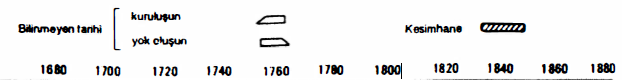
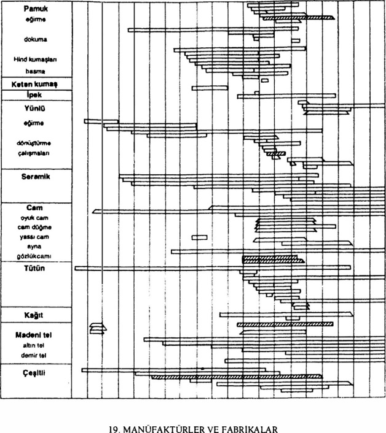
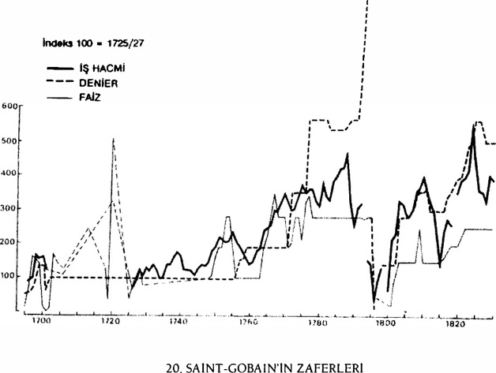
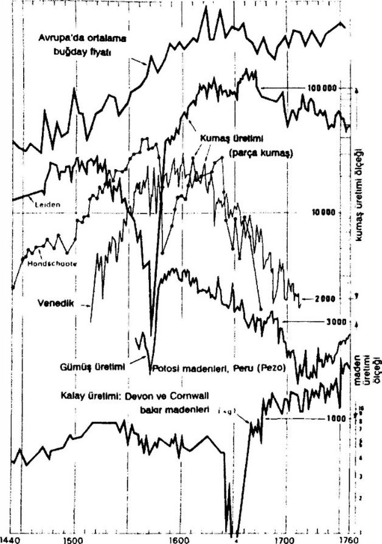
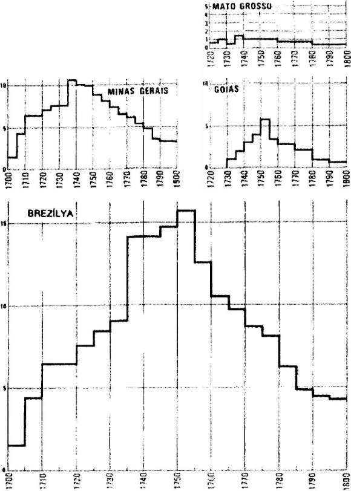

Endüstri, kelime eski anlamından tam sıyrılamamaktadır: çalışma, faaliyet, beceri. Kelime yaklaşık XVIII. yüzyılda, ebediyen geçerli olacak, bildiğimiz anlamını kazanmaktadır, ama sanat, manüfaktür, imalat gibi kelimelerin ona uzun zaman rekabet ettikleri bir alanda. XIX. yüzyılda zafer kazanan kelime, büyük endüstriyi işaret etme eğilimindedir. Demek ki, burada çoğu zaman önendüstri'den söz edeceğiz (kelimenin çok hoşumuza gidiyor olmamasına rağmen). Ancak bu, bir cümle vesilesiyle, fazla bir vicdan azabı çekmeden önendüstriyel yerine, endüstriyel faaliyetlerden söz etmemizi veya endüstri diye yazmamızı engellemeyecektir. Hiçbir karışıklık mümkün değildir, çünkü buhar makinalarının, Newton’ın, Watt’ın, Cugnot’nun, Jouffroy’nın, Fulton’ın, “büyük endüstrinin bizi her yandan kuşattığı” XIX. yüzyılın öncesine yerleşiyoruz.
Şansımız var ki, bu alanda ilk açıklamalarımızın modelini inşa etmek zorunda değiliz. Daha bundan çok önceleri, 1924’te Hubert Bourgin tarafından bir model çizilmiş bulunmaktadır222 ve bu model o zamandan şimdiye kadar o denli az kullanılmıştır ki, hâlâ turfanda gibi taptazedir. Bourgin’e göre XV. ile XVIII. yüzyıllar arasındaki her endüstriyel hayat, a priori olarak farklılaştırdığı dört kategoriden birine, zorunlu olarak girmektedir.
Birinci kategori: “nebula”lar halinde yer tutmuş olan, sayılamayacak kadar çok ve minik aile atelyesi, yani bir usta, iki veya üç kalfa, bir veya iki çırak, yani tek başına bir aile. Daha dün tanık olduğumuz çivici, bıçakçı, köy demircisi böyledir ve bunlar Kara Afrika veya Hind’de hâlâ aynı tarzda olup, yardımcılarıyla birlikte açık havada çalışmaktadırlar. Ayakkabı tamircisinin dükkânı kadar, narin aletleri ve nadir hammaddesiyle kuyumcunun işliği veya anahtarcının karmaşık atelyesi veya eğer evinin önünde çalışmıyorsa, dantelcinin iş gördüğü oda da bu kategoriye girmektedir. Veyahut, XVIII. yüzyıl Dauphine’sinde kentlerde veya kentlerin dışındaki şu “aile veya zenaat tipinde, kısıtlı nitelikte olan küçük işletmeler sürüsü”: hasat veya bağ bozumundan sonra “herkes işe koyulmakta ... bir aile eğirmekte, bir başkası dokumaktadır”. Bu “tek hücreli” ilkel birimlerin herbirinde “görevler ayrışmamıştır ve süreklidir”, öylesine ki, işbölümü çoğu zaman onların üstünden geçmektedir. Aile tipi olan bu işletmeler, pazarı ve kârın alışılmış kurallarını yarı yarıya ıskalamaktadırlar.
Bazen biraz hızlı bir şekilde, sektörel-olmayan olarak nitelenen bu faaliyetleri bu kategorinin içine yerleştireceğim: ekmek satan fırıncı, un üreten değirmenci, peynirci, hayat suyu veya küspe damıtıcıları ve bir “hammadde”den itibaren, bir cins tü- ketilebilen et üreten kasapların kategorisi. 1791 tarihli bir İngiliz belgesi, bu sonuncuların yüklendiği ne kadar da çok iş var demektedir: “They must not only know how to hill, cut up and dress their meat lo advantage, hut how to huy a bullock, sheep or calf, standing".
Bu zenaat tipi önendüstrinin esas çizgisi, çoğunluğu oluşturmaktan kaynaklanan önemi, hep kendinin benzeri olarak kalan bir biçimde, kapitalist yeniliklere karşı direncidir (kapitalizm bazen tam anlamıyla uzmanlaşmış bir meslek dalını kuşatma altında tutarken, bu dal birgün, tıpkı olgun bir meyva gibi, büyük olanakları olan girişimcilerin eline düşmektedir). Çoğu zaman XIX. yüzyıla, hatta XX. yüzyıla kadar yerlerinde kalacak olan geleneksel meslek ve zenaatların uzun listesini oluşturabilmek için, koskoca bir araştırma gerekir. 1838 gibi bir tarihte bile, Cenova kırlarında eski telaia da velluto, kadife dokuma tezgâhları varlıklarını sürdürüyorlardı. Fransa’da uzun süre birinci durumda olan zenaat tipi endüstri, modern endüstrinin arkasında ikinciliğe, ancak 1860’lar civarında düşecektir.
İkinci kategori: dağınık, ama birbirlerine bağlı atelyeler. Hubert Bourgin bunları dağınık imalathaneler adı altında ifade etmektedir (bu uygun terimi G. Volpe’den almıştır). Ben dağınık manüfaktürler terimini tercih ederdim, ama ne önemi var! İşte XVIII. yüzyılda Le Mans civarındaki yünlü etamin imalatı, isterse, bundan yüzyıllarca öncesinde, 1350’lere doğru, Villani dönemindeki Floransa Arti della lana (Floransa çevresindeki 50 km. bir çap içinde ve kentte 60.000 kişi) söz konusu olsun, çok geniş mekânlar üzerindeki noktalarla karşı karşıyayız, ama bu noktalar birbirlerine bağlanmışlardır. Eşgüdümü sağlayan, aracılık yapan, eserin yaratıcısı, hammaddeyi avans olarak veren, sonra bunu eğirmeden dokumaya, fule etmeye, boyanmaya taşıyan girişimci tüccardır. Tüccar kumaşın her aşamasıyla uğraşmakta, nihai malı elde etmekte, ücretleri ödemekte ve koşunun sonunda, yakın veya uzak ticaretin kârlarını kendine ayırmaktadır.
Bu dağınık imalathane Orta Çağdan itibaren oluşmuştur ve bu oluşum yalnızca dokuma alanında değil, aynı zamanda “çok erkenden tel, bıçakçılık, çivicilik, demir eşya alanlarında da" meydana gelmiştir ve bu gibi işler “Normandiya, Champagne gibi bazı bölgelerde, köken özelliklerini günümüze kadar korumuşlardır”. Örneğin metalürji endüstrisi, Kolanya çevresinde XV. yüzyıldan itibaren veya Lyon çevresinde XVI. yüzyıldan itibaren, veyahut da demir eşya yapımcılarının bulunduğu Val Camonica’dan, kentin zırhçı dükkânlarına kadar, Brescia çevresinde de durum böyledir. Her zaman birbirlerine bağlı olan işlerin bir silsilesi söz konusudur ve bu durum mamul ürünün nihai halini almasına ve ticari işleme kadar sürmektedir.
Üçüncü kategori: meslek dalına ve ülkelere göre farklı tarihlerde olmak üzere, geç tarihlerde oluşan “biraraya toplanmış imalathane". XIV. yüzyılın su gücünü kullanan demirhaneleri, o tarihte bile biraraya toplanmış imalathanelerdir: çeşitli işlemler burada, aynı yerleşim yerinde biraraya getirilmiş durumdadır. Bira, deri ve cam imalathaneleri için de aynı durum söz konusudur. Özellikle XVIII. yüzyılın ikinci yarısında, Avrupa ölçeğinde sayıları artan, ister devlete, ister özel kişilere ait olsun, her türden imalathane -ama çoğunluğu dokuma alanında-, manüfaktür kategorisine daha fazla uymaktadır. Bunların karakteristiği, az veya çok geniş olan binalarda, emek gücünü biraraya toplamış olmalarıdır; bu emeğin gözetimine, daha ilerlemiş bir işbölümüne, kısacası artan bir üretkenliğe ve ürün kalitesinin yükseltilmesine olanak vermektedir.
Dördüncü kategori: akar su ile buharın bileşik gücüne sahip olan makinelerle donatılmış imalathaneler. Marx’ın kelime haznesinde bunlar kısaca “fabrikalar"dır. Aslında fabrique ve manufacture kelimeleri, XVIII. yüzyılda gündelik dilde, birbirlerinin yerine kullanılmışlardır. Fakat daha iyi bir anlama sağlama amacıyla, manüfaktür ile fabrikayı birbirinden ayırmamızı engelleyen bir şey yoktur. Daha açık olmak için, mekanik hale gelmiş diyeceğimiz fabrika, bizi bu eserin kronolojisinden uzaklaştınnakta ve endüstri devriminin yolundan, bizi daha şimdiden XIX. yüzyılın gerçeklerinin içine sokmaktadır. Ancak ben, Agricola’nın (1556) De Re Metalli- ca’sındaki resimlerde görüldüğü haliyle; Orta Avrupa’da tipik olarak modern olduğunu farkettiğimiz, XVI. yüzyılın maden işletmesinde, mekanize hale gelmiş fabrikanın önemli bir örneğini görmekteyim, hatta buhar gücü bu gibi işletmelere, bilinen cimrilik ve yavaşlıkla, iki yüzyıl sonra girmiş olsa hile. Aynı şekilde, Cantabria bölgesinde “XVI. yüzyılın başında suyun çevirici güç olarak kullanılması, gerçek bir endüstriyel devrimi belirlemiştir". Diğer örnekler, XVII. yüzyılda mekanik testereleri, vinçleri, yelken diken makinalarıyla, Amsterdaın yakınındaki Saardam tersaneleri; ve hidrolik dolaplar kullanan çok sayıda küçük fabrika, kâğıt değirmenleri, kumaş ezme değirmenleri, ipek atelyeleri veya Dauphine'deki Vienne’de, değirmen taşlarının ve körüklerinin mekanik olarak işletildiği küçük kılıç imalathaneleri.

Ansbach ve Bayreuth prenslikleri “Frankonya” Almanya’sının küçük, ama çok kalabalık ülkeleri olup, 1806-1810’da Bavyera'ya bağlanmışlardır. Yaklaşık yüz kadar manüfaktürün dökümü bir sondaj değerindedir ve Sombart-Marx arasında (birinciye göre) fabrika haline gelmeyen veya (ikinciye göre) gelen manüfaktürler hakkındaki tartışmayı sonuca bağlamaktadır. 1850'de 20 kadar manüfaktür ayaktadır, yani başka biri. Gerçek çoğu zaman ne bir, ne de öteki yandadır. Grafik O, Reuter, Die Manufaktur im Frankischen Baum, 1961, s. 8’den alınmıştır.
Demek ki, kabaca birbirlerini izleyen dört kategori, dört tip vardır, ama “değişik yapılar birbirlerini izlerken, hemen birbirlerinin yerine geçmemektedirler" Özellikle de -Sombart bir kere de Marx’a galip gelsin-, manüfaktürden fabrikaya doğal bir geçişin mantığı yoktur. O. Reuter’de ödünç aldığım, 1680-1880 arasında Ansbach ve Bayreuth prensliklerindeki manüfaktür ve fabrikalara ilişkin tablo, belli bir örneğe ilişkin olarak, bazılarının arasında belli uzantılar olduğunu göstermektedir. Ama zorunlu bir izleme ve bunun doğal bir durum olmadığını da göstermektedir.
Bu basitleştirici şema, dünyanın yoğun toplumlarına doğru, kolaylıkla genişletilebilmektedir.
Avrupa dışında, özellikle ilk iki aşamaya -kişisel atelyeler, birbirlerine bağlanmış atelyeler- rastlanmakta; manüfaktür istisna olarak kalmaktadır.
Biraz da sihirbaz olan demircileri ve ilkel dokumacıları ve çömlekçileriyle, Kara Afrika’nın tümü A aşamasında yer almaktadır. Koloni Amerika’sı bu ilkel düzlemde, herhalde kötü donanımlıdır. Ancak, Amerikan toplumunun tutunduğu yerde, zenaatkârlar -eğiriciler, dokumacılar, çömlekçiler ve Meksika’da olduğu kadar, Peru’da da hâlâ ayakta duran şu devasa eserler olan kilise ve manastırları inşa edebilen işçiler- hâlâ faaldirler. Hatta işgâlci, obrajes, zorla çalıştırılan işgücünün yün. pamuk, kenevir, ipek işlediği atelyeler kurmak için bu durumdan yararlanmıştır. Kategorilerimizin üst düzleminde de, devasa gümüş, bakır, cıva ve kısa bir süre sonra tüm Brezilya ölçeğinde bilinecek olan, zenci altın işçilerinin biraz gevşek, ama geniş şantiyeleri yer almaktadır. Veya gene Brezilya’da olmak üzere, İspanyol Amerika’sının ada ve tropikal bölgelerinde, sonuçta manüfaktür sayılabilecek olan, emek gücü, su veya hayvan yığılmaları olan şeker değirmenleri için de aynı şey söylenebilir, bunlar çeşitli cinsten şeker, rom ve tafia üreten imalat atelyeleriyle birlikte bulunmaktadırlar.
Fakat bu koloni Amerika’larının üzerinde, anavatan tekelleri ağırlık yapmaktadır: bir sürü korunma, bir sürü yasak. Sonuçta, çeşitli “endüstriyel" tabakalar, burada uyumlu bir şekilde gelişmişlerdir. Temelde, Avrupa zenaat aleminin, çoğu zaman önemli başarıları olan şu kaynaşması, şu zenginliği eksiktir. XVII. yüzyılın ikinci yarısına ait bir seyyahın kendi tarzında söylediği budur “Hindlerde savaş ve hatta birçok konuya ilişkin olarak yalnızca kötü zenaatkârlar var (biz buna, mühendis yok diye ekleyeceğiz). Örneğin iyi cerrahi aletleri yapmaktan anlayan kimse yok. Burada matematik ve seyrüsefere ilişkin hiçbir şeyin yapımı bilinmiyor”. Ve tabii ki, çok daha yararlı olan birçok başka şey için de aynı durum söz konusudur. Yalnızca örnek olarak söylersek, şeker imalathanelerinin tüm bakır ve demir kazanlarıyla, çiviler deniz ötesinden gelmektedir. Temelde, Avrupa'nın usta kaynayan zenaat dünyasının olmamasında, nüfus miktarının hiç kuşkusuz rolü vardır ve onunla birlikte, yerlilerin olağanüstü sefaletinin de payı bulunmaktadır. 1820'de bile, çarın hizmetindeki bir deniz subayı olan Kotzebuc (Alman öğrenci Karl Sand tarafından 1819'da katledilen şairin oğludur) Rio'ya geldiğinde, Portekiz için bir altın ve elmas madeni olan Brezilya, ona “bizatihi fakir, sömürülen, az nüfuslu, her tür kültür zihniyetinin sürmesinin olanaksız olduğu" bir ülke olarak gözükmüştür.
Çin'de ve Hind'de, bunun tersine, tabandaki kalabalık ve becerikli, hem kentsel, hem de kırsal bir zenaatkâr kitlesinin zenginliği vardır. Öte yandan, Gucerat veya Bengal dokuma endüstrisi bir cins “dağınık imalathaneler" yığılması ve minik atelyeler takım yıldızıdır. Ve üçüncü aşama endüstrileri her iki yanda da eksik değildir. Pekin'in kuzeyinde, kömür çıkartılması, devletin denetimine ve yatırılmış sermayenin düşüklüğüne rağmen, çoktan netleşmiş bir yoğunlaşma göstermektedir. Çin'de pamuk işlenmesi her şeyden önce köylü ve aile içindir, ama daha XVII. yüzyılın sonundan önce, Şanghay'ın güneyindeki Songciang manüfaktürleri, sürekli olarak 200.000'den fazla işçi istihdam etmektedirler ve bunlara fason çalışanlar dahil değildir. Kiang Su'nun başkenti Su-çen, ipek işleyen 3-4 bin tezgâha sahiptir. Yeni bir tarihçi, burası bir Lyon, bir Tours, “hatta daha iyisi bir Lucca'dır" demektedir. Aynı şekilde “Kin te Çun 1793'te porselen pişirmek için kullanılan... hepsi aynı anda yakılan üç bin fırına" sahiptir. “Fırınlar gece yakıldıktan için, tüm kentte yangın çıkmış gibi olmaktadır".
Bu olağanüstü becerikli ve dahiyane zenaatkârlığın ve Çin, ne de Hind'de, tarihin bizi Avrupa konusunda alışık kıldığı alet edevatı üretmiş olması şaşırtıcıdır. Bu durum Hind'de, Çin'dekinden daha keskindir. 1782'de Hind'i boydan boya geçen bir seyyah şöyle kaydetmektedir: “Hind tezgâhları bize basit gözüküyorlar, çünkü Hindliler genelde az makina kullanmakta ve çoğu zaman elleriyle birlikte bir iki araç kullanmakla yetinmektedirler ki, biz aynı iş için yüzlerce alet kullanırız". Aynı şekilde bir Avrupalı, “aletlerini, fırınını, körüğünü beraberinde taşıyan ve ona iş verilen heryerde çalışan" şu Çinli demirci karşısında ancak şaşırabilir. “Tezgâhını onu çağıran kişinin kapının önünde kurmakta, topraktan bir duvar yapıp, önüne fırınını kurmaktadır; bu duvarın arkasına iki deri körük yerleştirmekte, çırak bir birine, bir diğerine basarak bunları çalıştırmaktadır; böylece ateşi canlandırmaktadır; bir taş ona örs görevi yapmaktadır, aletleri bir pense, bir çekiç, bir tokmak, bir törpüdür". Kırdaki herhangi bir dokumacı karşısında da aynı şaşkınlık, çünkü harika Çinli ustalar olduğunu düşünüyorum. “Sabahleyin kapısının önünde, bir ağacın altına tezgahını kurmakta ve bunu güneş batarken sökmektedir. Bu tezgâh çok basittir; toprağa yerleştirilen dört parça tahta tarafından taşınan iki rulodan ibarettir. Zinciri kateden iki sopa vardır ve bunlardan biri, tezgâhın altında durduğu ağaca bağlı iki ip tarafından, diğeri de ustanın ayağına bağlı iki ip tarafından tutturulmuştur... bu düzenek ustaya, ipleri zincirden uzaklaştırarak atkıya geçirme olanağını sağlamaktadır". Bu, ilkel yatay tezgâhtır; bu usul bugün bazı Kuzey Afrika göçebeleri tarafından, çadırlarında kullandıkları halıların dokunmasında hâlâ kullanılmaktadır.
Ancak insanın alın teri uğruna iş görebilecek bu ilkel alet kutusunun sürme nedeni nedir? Acaba insanların Hind ve Çin'de çok kalabalık, sefil ve yoksul olmaları mıdır? Çünkü alet ile işgücü arasında korelasyon vardır. İşçiler bu durumu, makinalar ortaya çıktığında fark edeceklerdir, ama XIX. yüzyılın “luddist" öfkelerinden çok önceleri, sorumlular ve entelektüeller bunun bilincine varmışlardır. Şaşırtıcı bir mekanik testerenin icad edildiğinden haberdar edilen Guy Patin mucide, eğer hayatına önem veriyorsa, kendini işçilere tanıtmamasını tavsiye ediyordu. Montesquieu değirmen yapımını lânetliyordu: ona göre tüm makinalar insan sayısını kısıtlamaktadır ve “tehlikelidirler”. Marc Bloch’un, Encyclopedie'nin ilginç bir pasajında varlığını işaret ettiği fikir de aynıdır, ama tersine dönmüş bir şekildedir “emek gücünün pahalı olduğu heryerde, onu makinalarla ikame etmek gerekir; böylece ülkedeki en ucuz şeylerin düzeyine getirilmiş olur. İngilizler bunu Avrupa’ya uzun zamandan beri öğretiyorlar”. Her şeyden sonra, bu işaret kimseyi şaşırtmayacaktır. Bundan bir yüzyıl önce, merakımızı tahmin etmeden, bizi daha çok şaşırtan şey, Ağustos 1675’te Londra’daki bir Cenova konsolosunun kısaca yazdığı iki haberdir: başkentteki 10.000 ipek işçisi, şerit imâl eden Fransız tezgâhlarının getirilmesi üzerine ayaklanmışlardır; bu tezgâhlarda bir kişi 10-12 şeridi aynı anda dokumaktadır; yeni tezgâhlar yakılmıştır ve eğer askerler ile burjuva muhafızların devriyeleri müdahale etmeseydi, daha da kötüsü olabilirdi”.
Hubert Bourgin’in modeli vurguyu tekniğin üzerine vurmaktadır; basitleştirmesi buradan kaynaklanmaktadır. Tamamlanmamışlığı da buradan kaynaklanmaktadır. Onu geçiş ölçüde karmaşıklaştırmak gerekmektedir.
Bir ilk işaret kendiliğinden ortaya çıkmaktadır: önendüstri özgünlüğüne rağmen, net sınırları olan bir sektör değildir. XVIII. yüzyıl öncesinde heryerde hazır ve nazır olan, onun yanıbaşında bulunan ve bazen onu boğan tarımdan iyice sıyrılamamaktadır. Hatta zeminde, katı bir şekilde kullanım değeri alanında yer alan, yalnızca aile veya köy için iş gören bir köylü endüstrisi mevcuttur. Çocukken, bir Meuse köyünde araba tekerleklerine çember geçirilişini bizzat gördüm: ateşte yumuşatılan demir çember, daha kor halindeyken tahta tekerleğin etrafına geçirilmekte, o da hemen yanmaktaydı; hepsi suyun içine atılıyor, soğuyan demir tekerleği sıkıştırıyordu. İşlem tüm köyü seferber etmekteydi. Ama eskiden köylerde imal edilen şeylerin hepsini sıralamaya kalksak, bitiremeyiz. Zengin evlerde bile, ama özellikle fakir hanelerde, kendi kullanımları için çuhalar, kaba bez gömlekler, mobilyalar, bitkisel elyaftan koşumlar, ıhlamur ağacı kabuğundan halatlar, deri sepetler vb. yapılmaktaydı. Doğu Avrupa’nın Ukrayna veya Litvanya gibi azgelişmiş ülkelerinde, bu kendine yeterlik, Batı Avrupa’dakinden de yüksektir. Gerçekten de, Batı’dan aileye yönelik bir endüstri ile, gene kırsal, ama pazara yönelik bir endüstri çakışmaktadır.
Bu zenaat iyi bilinmektedir. Avrupa’nın heryerinde, kasabalarda, köylerde, çeftliklerde kış gelince muazzam bir “endüstriyel” faaliyet başlayarak, tarımsal faaliyeti ikame etmektedir. Çok soyutlanmış mezralarda bile böyledir: örneğin 1723’te Normandiya’daki Bocage’ın 30 kadar “zor ulaşılan” köyü ve, 1727'de bazı Saintonge köyleri, pazara )onca kurallarına uymayan ürünler götürmüşlerdir. Bunlara karşı sert mi davranmak gerekir? Manüfaktür müfettişlerinin köylere giderek, kayıp kırın cahil insanlarına “manüfaktürlere ilişkin kuralları” açıklamaları daha uygun olacaktır. 1780’de Osnabrück civarındaki keten endüstrisi, köylü, karısı, çocukları ve uşaklarından ibarettir. Bu tamamlayıcı işgücünün verimliliği çok önemli değildir! Kış gelmiştir: “uşak ister çalışsın, ister çalışmasın, beslenmek zorundadır”. Bu durumda çalışması daha iyidir! Sonuçta, faaliyetlere hükmeden mevsimlerin ritmi, Giuseppe Palomba’nın söylediği gibi “takvim”dir. Hatta XVI. yüzyılda Liege kömür yataklarındaki madenciler, her yıl Ağustos ayında galerileri terkederek, hasat yapmaya gitmektedirler. Meslek ne olursa olsun, kuralın adeta istisnası yoktur. Örneğin, Floransa, 1 Haziran 1601 tarihli bir mektup şöyle demektedir: “şaşılacak bir şey olmamasına rağmen, yün satışı yavaş gidiyor: az çalışılıyor, çünkü işçi kıtlığı var; hepsi kıra gitti”. Beauvais veya Anvers’de olduğu gibi, Lodeve veya herhangi bir endüstri kentinde, yaz gelince, tarla çalışmaları duruma hükmetmektedir. Kış geri gelince, zenaat faaliyeti tekrar kral olmaktadır, hatta yangın tehlikesine rağmen, mum imalatı için de aynı durum söz konusudur.
Tabii ki tersine, veya en azından farklı örnekler de işaret edilebilir. Kesintisiz bir işçi çalışması yerleşmeye çalışmaktadır. Örneğin 1723’te Rouen’da “(eskiden) hasat için tezgâhlarını terkeden kır işçileri..., (bunu) artık yapmıyorlar, çünkü çuha ve diğer yünlü imalatına devam etmekten daha büyük yarar sağlıyorlar”. Sonuç: “tarlalarda hasat yapacak işçi kıtlığından” buğday filizlenme tehlikesiyle karşı karşıya kalmaktadır. Parlamento, “buğday ve diğer tahılların hasat zamanında” manüfaktür çalışmasını yasaklamayı düşünmektedir. Kesintili çalışma mı, kesintisiz çalışma mı? Vauban’ın hesaplarında, zenaatkâra yılda 120 işgünü atfettiğini unutmayalım; çalışılmayan bayramlar -bunlar çok sayıdadır- ve mevsimlik meşgüliyetler, yılın geri kalanını tüketmektedir.
Demek ki, ayrılma kötü ve gecikmiş olarak ortaya çıkmaktadır. Ve Goudar endüstri ile tarımın coğrafi temeldeki boşanmalarından söz ederken, herhalde yanılmaktadır. Aynı şekilde Roger Dion’a göre, “Laval’den Rouen, Cambrai ve Fourmies”ye uzanarak, biri kuzeyde yer alan ve geleneksel tezgâhların vatanı olan, diğeri de güneyde yer alan ve bağın vatanı olan iki Fransa’yı birbirinden ayıran bir hattın varlığına da inanmıyorum. Bağlarla kaplı olan Languedoc, 1680’lere doğru emin de Bas- ville’e göre 450.000 dokuma işçisine sahip değil miydi? Ve Orleans yönetim bölgesi gibi bir bağ alanında, 1698 sayımı hem 21.840 mülk sahibi bağcının, hem de “kasaba ve köylere dağılmış 12.171 zenaatkâr”ın varlığını ortaya koymuştur. Buna karşılık, evde işgörmenin refahın yerleşik olduğu bağcı ailelerinde görülmediği de doğrudur, şarap ülkesi olan Arbois çevresinde, dokuma endüstrisi el emeği kıtlığından ötürü yerleşememiştir. Leyden’de, XVII. yüzyılda çok güçlü olan yünlü dokuma faaliyeti, çok zengin olan civardaki kırdan hiçbir yardım alamamaktaydı. XVIII. yüzyılda bu yardıma mutlak olarak ihtiyaç duyduğu zaman, kendi evinden uzaktaki, fakir kırsal alanlara başvurmak zorunda kalmıştır. Ve bu alanlar oldukça ilginç bir şekilde, Hollanda’nın büyük modern dokuma merkezleri haline gelmişlerdir.
Aslında endüstri ancak bir sürü faktör ve tahrik unsuruyla açıklanabilmektedir. İpek endüstrisi merkezi olan Lucca, XIII. yüzyıldan itibaren “(çevresinde ve ona ait olan) işlenebilir toprak kıtlığından ötürü... öylesine bir endüstri merkezi haline gelmiştir ki, atasözlerinde karıncalar cumhuriyeti olarak anılmıştır”, bunu Ortensio Landa, Paradossi’lerinden (1543) birinde iddia etmektedir. İngiltere’de XVI. yüzyılda, Narfalk kıyısına, bir renkli örme çorap endüstrisi beklenmedik bir şekilde yerleşmiştir. Raslantıyla değil. Bu kıyı birbirlerini izleyen bir dizi balıkçı limanından meydana gelmektedir ve bunların rıhtımları ağlarla doludur. Erkekler İzlanda’ya kadar gitmediklerinde, Kuzey Denizinde ringa, uskumru ve çaça avlamaktadırlar. Salthouse’larda balık tuzlama işinde istihdam edilen muazzam bir kadın emek gücü, av mevsiminin dışında işsiz kalmaktadır. İşte bu yarı işsiz emek gücü tüccar girişimcileri cezbetmiş ve yeni bir endüstri kurulmuştur.
Böylece, önendüstriyi elinden tutarak yönlendiren, çoğu zaman fakirlik olmaktadır. Söylendiğine göre Colbert, asık suratlı bir konjonktür varken, ayak direyen, disiplinsiz bir Fransa’ya işbaşı yaptırtmıştır. Çoğu zaman olduğu gibi, bu işbaşı ne kadar vasat olursa olsun, gene de “ikinci bir inayet”, bir cins çıkış değil midir? İstekle alaycı olan Savary de Bruslons (1760), şöyle ifade etmektedir: “Endüstrinin (kelimenin tereddütsüz kullanıldığına dikkat ediniz) harikalarının çoğu zaman ihtiyaçların bağrından çıktıkları görüldü”. İhtiyaç kelimesi akılda tutulmalıdır. Rusya’da kötü topraklar, “kara” köylülüğün payıdır, yani yaşayabilmek için buğday ithal etmek zorunda da kalan özgür köylülüğün. Öte yandan, zenaat tipi endüstri, tercihan onların çerçevesinde gelişmektedir. Aynı şekilde, Constanz gölü, Savabya Jura’sı veya Silezya dağlıları topraklarının fakirliğini ikame etmek üzere, XV. yüzyıldan itibaren keten işlemeye başlamışlardır. Ve Highlands’da, fakir toprak ürünleriyle geçinemeyecek olan İngiliz köylüleri, bazıları madenci, ötekileri de dokumacı olarak durumu kurtarmaktadırlar. Kuzey ve Batı İngiltere’nin köylülerinin evde dokunmuş kumaşlarını, hâlâ yağlı bir şekilde getirdikleri kasaba pazarları, Londralı tüccarlar tarafından toplanan ürünlerin büyücek bir bölümünü meydana getirmektedirler, tüccarlar bu kumaşları satmadan önce apreletmektedirler.
Zenaat toprağa ne kadar az bağlıysa, o kadar kentsel olmakta ve o denli de az kök salmaktadır. Onun da kendi çapında bir hareketliliği olan kırsal işgücünün üzerinde (özellikle fakir ülkelerde), stricto sensu zenaat alanı, en hareketli insan kesimini meydana getirmektedir. Bu, doğrudan önendüstriyel üretimin doğasına bağlıdır; bu üretim, sürekli olarak ani yükselmelere ve dikine inişlere tanık olmaktadır. İleride şeması verilen, parabol biçimli eğriler bu konuda bir fikir vermektedirler. Bir anlık bir refah olmakta, sonra her şey tersine dönmektedir. İngiliz önendüstrisini yavaş yavaş yaratmış olan zenaatkar göçlerine ilişkin bir kroki, bunu harika şekilde kanıtlayabilirdi. Sürekli olarak kötü ücret alan, gıdalarını sağlayabilmek için pazarda yüz kızartıcı durumlarla karşılaşmak zorunda kalan zenaatkârlar, her tür ücret hareketine, her talep daralmasına karşı hassastırlar. Hiçbir şey onların istekleri doğrultusunda gitmediğinden, onlar da sürekli göçmenler haline gelmektedirler: “en küçük olayda yerleşebilecek, seyyar ve geçici bir gövde”. Marsilya’da 1715’te yazıldığına göre, eğer manü- faktürler iflas ederse “işçilerin yabancı ülkelere göçü” olacaktır. “İnsanların dostu” Mirabeau, endüstrinin narinliğinin “köklerinin, gerçek bolluğun yolunu izlemek üzere, her zaman göçe hazır olan işçilerin parmaklarının ucunda” olmasına bağlayarak açıklamaktadır, ona göre bu işçiler “geçici insanlar”dır. “Sanatkârlarımızın (zenaatkârlar) sürekliliğinden, tarlalarımızın hareketsizliğinden olduğumuz gibi emin olabilir miyiz?”. Dupont de Nemours tabii ki hayır diye cevap vermekte, ve Forbonnais de artırmaktadır: “Sanatlar istisnasız seyyardır”.
Zenaatlar gelenek icabı böyledirler (kalfa örgütleri); gerektiği için böyledirler; zaten kötü olan hayat koşullarının daha da ağırlaşarak, çekilmez hale geldiği her seferinde böyledirler. Onları hiç de sevmeyen şu Reimsli burjuva (1658), Günlüh’ünde “eğer terim yerindeyse, günü gününe yaşadıkları söylenebilir” demektedir. Beş yıl sonra zaman güçleştiğinde, şöyle farketmektedir: “Halk … emeğini sarfetmekte, ama çok düşük fiyat karşılığında, öylesine ki, ancak en uyanıklar hayatta kalabilmektedir”, diğerleri hastaneye düşmekte veya sokaklarda dilenmektedir. Ertesi yıl, 1664’te, işçiler tezgâhlarını bırakarak “ağır işçi olmuşlar veya köylerine dönmüşlerdir”. Londra ancak biraz daha iyi donanımlıya benzemektedir. 2 Ocak 1730 tarihli bir Fransız bülteni, ekmek fiyatının iki “sol” düştüğünü (yaklaşık % 9) belirttikten sonra, şunu eklemektedir: “böylece işçiler ücretleriyle yaşayabilecek duruma gelmişlerdir”. Bir manüfaktür müfettişinin raporuna güre, 1773'e doğru çok sayıda Langue- doclu dokumacı “ekmeksiz ve onu alacak kaynaktan mahrum olarak” (işsizlik vardır), “yaşayabilmek için vatanlarından ayrılmak” zorunda kalmışlardır.”
Bir kaza veya başka bir şey meydana geldiğinde, hareket hızlanmaktadır. Örneğin Nantes fermanının yürürlükten kaldırılmasından (1685) sonra, Fransa'dan itibaren böylesine bir göç meydana gelmiştir. Örneğin Yeni İspanya’da 1749'da ve bundan da fazlası 1785-1786’da, Kuzey madenlerinde mısır konvoylarının durmasıyla kıtlık meydana gelince, Güneye ve tüm alçaklıkların kenti Meksika'ya doğru bir hücum başlamıştır, “lupanar de infamias y disoluciones, cueva de picaros, infierno de ca balleros, purgatorio de hombres de bien...”. iyi niyetli bir tanık 1786'da, kent girişlerini örerek, bu yeni hastalıktan korunmayı önermektedir.
Buna karşılık, gelişmek isteyen her endüstri, yabancı ve uzak olsa bile, başka kentlerde mahreç ile kendine gereken uzman işçileri bulmayı başarmaktadır. Ve hiçkimse kendini bu işçilerden mahrum etmemektedir. Daha XIV. yüzyılda Flaman kentleri, onlara “iyi bira, iyi sığır eti, iyi yataklar ve daha da iyi arkadaşlar” vaadederek (İngiliz kızları güzellikleriyle ünlüdürler), kalfalarını ülkesine çeken İngiliz kralının siyasetine engel getirmeye çalışmaktadırlar. XVI. yüzyılda ve XVII. yüzyılda da işgücünün yer değiştirmesi çoğu zaman, uluslararası işbölümünün terkine, bozulmasına tekâbül etmekteydi. Bunun sonucunda, bazen iş göçünü önlemek üzere gaddar tedbirler alınmakta, işçiler sınırlarda veya yollarda yakalanarak, zorla götürülmekteydiler. Veya yabancı kentlerde, onların ülkeye dönme pazarlıkları yapılmaktaydı.
1757’de Fransa'da bu siyaset nihayet eskimiştir. Paris'te Lyon, Dauphine, Roussillon ve Bourbonnais idari bölgelerine, kaçak işçilerin takibatının durdurulması emri gelmiştir: bu, kamu kaynaklarının israfı olacaktır. Gerçekten de, devir değişmiştir. XVIII. yüzyılda, endüstriyel faaliyetin genelleşmesi, heryerde varolması söz konusudur; bağlantılar da çoğalmıştır. Heryerde manüfaktürler, heryerde kırsal endüstriler. Hiçbir kent, kentçik, kasaba (özellikle o), köy yoktur ki, dokuma tezgâhlarına, demirhanelere, tuğla ve kiremit atelyelerine, bıçkıhaneye sahip olmasın. Merkantilizm kelimesinin akla getirdiğinin tersine, devletlerin siyasetleri endüstrileşmedir ki, o da kendiliğinden gelişmekte ve toplumsal zararlarını sergilemektedir bile. Muazzam işçi yığılmalarının taslağı belirmektedir: Newcastle kömür madenlerinde 30.000 kişi; daha 1680'lerde Languedoc'ta dokumayla uğraşan 450.000 kişi; 1795'te Hainaut, Flandre, Artois, Cambresis ve Picardie gibi 5 ilde, çalışan halkın temsilcilerinden biri olan Paires’e göre, 1.500.000 dokuma işçisi. Bu, devasa bir endüstri ve ticarettir.
XVIII. yüzyılın ekonomik yükselmesiyle birlikte, endüstriyel faaliyet genelleşmiştir. XVI. yüzyılda esas itibariyle Alçak Ülkeler ve İtalya'ya yerleşmiş olan endüstri, Ural’a varana kadar tüm Avrupa’da gelişmiştir. Bunun sonucunda çok sayıda atılım, kalkış meydana gelmiş, her zaman icat olmayan çok sayıda yenilik projesi ortaya çıkmış ve işler köpüklenmiştir.
Blok halinde bakıldığında, zenaatkârların yer değiştirmeleri rastlantısal değildir: dip dalgalarını işaret etmektedirler. Örneğin, ipek endüstrisi XVII. yüzyılda, adeta tek bir hareketle, Mezzogiorno'dan Kuzey İtalya’ya geçtiyse; büyük endüstriyel faaliyet (ve onun ötesinde ticari faaliyet) XVI. yüzyılın sonuyla birlikte Akdeniz ülkelerinden uzaklaşarak, Fransa, Hollanda, İngiltere ve Almanya’da tercihli alanlarını bulduysa, her seferinde büyük sonuçları olan bir terazi hareketi müdahale etmiştir.
Fakat, oldukça düzenli başka alt üst oluşlar da vardır. J. A. Van Houtte’un yeni yayınının incelenmesi, Orta Çağdan XVIII. yüzyıla, hatta XIX. yüzyıla kadar, Alçak Ülkeler boyunca endüstrinin kent, kasaba ve kırlar arasında gidiş gelişine dikkat çekmektedir. Bu on-oniki yüzyıllık tarihin başlangıcında, endüstri kırda yayılmıştır. Bunun sonucunda, özgür, kendiliğinden ve aynı zamanda kökünden kopartmanın olanaksız olduğu bir şeyin karşısında olunduğu izlenimi alınmaktadır. Ancak, önendüstri, XIII. ve XIV. yüzyıllarda geniş ölçekte olmak üzere, kentlere göç etmiştir. Bu kentsel safhanın arkasından, 1350-1450 uzun depresyonunun ertesinde, güçlü bir geri çekilme yaşanacaktır: bu tarihlerde kır yeniden, tezgâhların istilasına olduğu kadar, loncaların denetimine geçtiği için yönetilmesi zor hale gelen, bundan da fazlası, pahalılaşan işgücünün hücumuna uğrayacaktır. Kentin endüstriyel açıdan toparlanması XVI. yüzyılda kısmen gerçekleşecek, sonra kır XVII. yüzyılda rövanşını alacak, daha sonra, XVIII. yüzyılda partiyi yarı yarıya kaybedecektir.
Bu basitleştirilmiş özet, işin özünü, yani Avrupa ve belki de dünya ölçeğinde, kırlar ve kentler gibi çifte bir klavyenin varlığını bildirmektedir. Böylece dünün ekonomisine bir alternatif, yani belli bir esneklik, girişimci tüccarlar ile devletin açık oyunlarına bir olanak belirmektedir. J. A. Van Houtte, hükümdarın vergi yönetiminin yalnızca kente veya aynı anda kırsal kesime de yönelik olmasına göre farklı rejimler ve ilerleme ile silinme arasındaki gidiş gelişleri yarattığını ileri sürerken haklı mıdır? Yalnızca kesin bir araştırma konuyu açıklığa kavuşturacaktır. Fakat bir olgu tartışma dışıdır: fiyatlar ve ücretler rollerini oynamaktadırlar.
XVI. yüzyılın sonunda ve XVII. yüzyılın başında İtalyan kentsel endüstrisini çabucak görünmez hale getiren ve ikinci dereceden kentlere, kentçiklere, kasabalara, köylere taşıyan da, benzeri bir süreç değil midir? İtalya'nın 1590-1630 arasındaki endüstriyel dramı, Kuzey endüstrisinin düşük fiyatlarıyla olan bir rekabet dramıdır. Domenico Sella, ücretlerin yasaklayıcı hale geldikleri Venedik hakkında, üç çözüm olduğunu söyleyerek, kaba bir açıklama getirmektedir: kırlarına doğru geri çekilmek, çok lüks mallarda uzmanlaşmak, emek gücü kıtlığını telâfi etmek üzere hidrolik döndürücü güç kullanan makinelere dayanmak. Bu acil durumda, üç yöntem de kullanılmıştır. Kötü olan, birincinin, yani kırsal zenaata, sanki doğalmış gibi geri dönülmesi, tam bir başarı getirmemiştir, zaten getirmesi de mümkün değildir: gerçekten de, Venedik kırları tüm kol gücüne muhtaçtır; bunları XVII. yüzyılda yeni ekimlere -dut, mısır- tahsis etmiştir ve tarım özellikle gelir getirici hale gelmiştir. Venedik'ten Balkanlara ve Hollanda'ya yapılan pirinç ihracatı düzenli bir şekilde artmaktadır. Ham ve iplik halindeki ipek ihracatı ise, 1600-1800 arasında dört katına çıkmıştır. ikinci çözüm olan lüks ile üçüncü çözüm olan makinalaşma, el emeğinin kıtlığı karşısında gelişmektedirler. Makinalaşma konusunda, Carlo Poni yakınlarda yararlı işaretlerde bulunmuştur. XVII. yüzyıl İtalya’sı bize böylece bir kez daha, genel tarihlerin olağan olarak söylediklerinden daha az atıl olarak gözükmektedir.
XVI. yüzyılın ortasında hâlâ gelişmekte olan İspanyol endüstrisi, yüzyıl sona ererken gerilemiş olsa bile, aynı tuzağa düşmüş değil midir? Köylü alemi 1558’e doğru, zenaat tipi endüstri kentlerden kırlara doğru taşarken, ona sığınak olamamıştır. İşte bu durum yarattığı zıtlık ile, İngiltere’nin konumunun sağlıklılığını aydınlatmaktadır; İngiliz konumu kırsal düzlemde çok sağlıklıdır ve çok erkenden, yün aracılığıyla, esas endüstri olan yünlü dokuma sektörüne bağlanmıştır.
Açıklamalarımızın bu noktasında, önendüstrinin belirsiz ve karmaşık dış hatlarını farketmeye başlıyoruz. Can sıkıcı, belki de olgunlaşmamış, ama bugünkü dünyanın akla getirdiği bir soru, kendiliğinden açığa çıkmaktadır: Eski Rejimde pilot endüstriler olmuş mudur? Bu cins endüstriler bugün, belki dün de, sermayeleri, kârları, işgücünü kendine çeken endüstrilerdir ve bunların atılımları, ilke olarak komşu sektörlere yansıyabilir ve oralarda bir canlanma yaratabilir -yalnızca yaratabilir-. Gerçekten de, Eski ekonomi tutarlıktan yoksundur ve hatta bugünün azgelişmiş ülkelerindeki gibi kopuktur. Bunun devamında, bir sektörde meydana gelen şeyler, onun sınırlarını zorunlu olarak aşmakta değillerdir. Öylesine ki, ilk bakışta önendüstri dünyası, bugünkü endüstrinin düzey farkları ve öncü sektörler içeren yapısındaki gibi engebelere sahip değildir.
Bundan da ötesi, tüm kitlesi itibariyle ele alındığında, bu önendüstri nisbi olarak ne kadar önemli olursa olsun, ekonominin tümünü kendine doğru terazilendirememektedir. Gerçekten de, endüstri, devrimine kadar, gelişmeye egemen olmanın uzağında kalmış, daha çok gelişmenin kararsız hareketi, ekonominin bütünsel yürüyüşü, arızaları ve sarsıntılarıyla önendüstriye egemen olmuş ve onun tereddütlü yürüyüşü ile baygınlık verici eğrilerini sağlamıştır. Gündemde olan üretimin matrisyel değerine dair tüm sorun (veya hemen hemen) budur. Eğer XIX. yüzyıl öncesindeki hakiki “egemen” endüstriler açığa çıkartılacak olursa, bu daha iyi kavranacaktır; daha önce de birçok kereler işaret edildiği üzere, bu “egemen” endüstriler geniş ve çeşitli dokuma alanında yer almaktadırlar.
Bu yerleşim bugün ancak şaşkınlık yaratabilir. Ama dünkü toplumlar yünlü kumaşı, yünlü elbiseyi, şatafatlı kıyafetleri değerli saymışlardır. Evlerin içi de kumaşlara, perdelere, duvar örtülerine, halılara, yünlü kumaşlar ve ince bezlerle dolu dolaplara ait olmuştur. Toplumsal gösteriş burada tam gaz yol almakta ve moda duruma hükmetmektedir. Nicholas Barbon buna sevinmekteydi (1690): “moda, kıyafetlerin değişmesi, ticaretin büyük bir harekete geçiricisidir” diye yazmaktaydı, “çünkü eskilerin aşınmasından önce yenilerini almaya itmektedir, moda ticaretin ruhu ve hayatıdır; hareketini ticaretin büyük bünyesi içinde muhafaza etmektedir; sanki bir insan sürekli bir ilkbahar halinde yaşıyormuş gibi giyinsin diye yapılmış bir icattır; bu insan, elbiselerinin sonbaharını asla görmemektedir”. Öyleyse, kendi içinde çok miktarda emeği biraraya getiren ve aynı zamanda tüccar açısından, kolayca yolculuk yapabilme avantajına sahip olan, değerine nazaran hafif olan kumaş yaşasın!
Ama Georges Marçais’yle birlikte (1930), kumaşın eskiden, tüm oranların korunması halinde, çeliğin eşdeğerlisi olduğunu söyleyecek kadar ileri gidecek miyiz? (William Rapp bu yargıyı kendi hesabına geçirmektedir). Bunların arasındaki fark, dokumanın endüstriyel olarak sahip olduğu şeyin, hâlâ bir lüks olmasıdır. Vasat kalitelerinde bile pahalı bir madde olmayı sürdürmekte, ve fakirler çoğu zaman kendi ihtiyaçlarını kendileri üretmeyi tercih etmekte, her halükârda çok az satın almakta ve elbise yenileme konusunda Nicholas Barbon’un tavsiyelerine uymamaktadırlar. Halkın kumaş müşterisi olması ancak İngiliz endüstri devrimiyle ve özellikle de, XVIII. yüzyılın sonundaki pamuklu dokumalarla gerçekleşecektir. Oysa, gerçekten egemen bir endüstri, geniş bir talep gerektirmektedir. Demek ki dokuma tarihlerini ihtiyatla okuyalım. Bu tarihlerin işaret ettikleri, birbirlerini izleyen krallıklar yalnızca moda değişimlerine değil de, aynı zamanda mübadelelerinin üst katında, birbirlerini izleyen üretim kaymalarına ve yeniden merkezlenmelerine de tekâbül etmektedirler. Sanki her şey, rakiplerinin dokumanın üstünlüğünü tartışmaktan vazgeçmedikleri bir süreç içinde cereyan etmektedir.
XIII. yüzyılda yün, hem Alçak Ülkeler, hem de İtalya demektir; izleyen yüzyılda ise özellikle İtalya’dır: “İtalyan Rönesansı, ama bu yündür!” Gino Barbieri yakınlarda toplanan bir kollokyumda böyle haykırmaktaydı. Daha sonra ipek, hemen hemen öncelikli hale gelmiş ve İtalya XVI. yüzyılda endüstriyel refahının son anlarını ona borçlu olmuştur. Fakat bu değerli dokuma kısa bir süre sonra kuzeye, İsviçre kantanlarına (Zürih), Almanya (Kolonya), Hollanda ve Nantes fermanının iptalinden sonra İngiltere’ye ulaşmıştır. Özellikle de, büyük ipek merkezi olma kariyerini günümüze kadar sürdüren Lyon’a. Ancak, XVII. yüzyıldaki yeni bir değişimle, İngiltere’nin ince yünlüleri, ipeğin aleyhine olmak üzere, muzaffer bir yarma harekâtını başarmışlardır; Fransız İpekçilerine inanılacak olursa, bu iş 1660’1arda gerçekleşmiş ve yeni yünlülerin modası Mısır’a kadar yayılmıştır. Nihayet, sonuncu savaşçı ve yeni galip pamuk. Pamuk uzun zamandan beri Avrupa’dadır. Ama, Avrupa’da bilinmeyen baskı ve boyama tekniklerine sahip olan Hind pamukluları güçlü bir hayranlık yaratarak, çabucak birinci sıraya çıkmışlardır. Hind, kumaşlarıyla Avrupa’yı istila mı edecektir? Bu sızma tüm engelleri aşmıştır. Öyleyse Avrupa’nın Hind’i taklid etmesi, pamuk dokuyup, üzerine basma yapması gerekmektedir. Fransa’da Hind pamukluları imal etmenin yolu, 1759’dan itibaren tamamen serbestleşmiştir. Marsilya’ya gelen hammadde miktarı, 1700’dekinden 10 kat fazla olarak, 115.000 kental olacaktır.
XVIII. yüzyılın ikinci yarısında, ekonominin genel canlılığının, tüm dokumacılık kesimlerinde genel bir üretim artışına yol açtığı doğrudur. Bu durumda eski ma- nüfaktürler bir yenilik ve teknik deha ateşiyle yanmaktadırlar. Hergün yeni bir üretim usulü ve yeni bir kumaş doğmaktadır. Yalnızca, muazzam bir atelyeler alanı olan Fransa’da, işte “Toulouse, Nismes, Castres'da ve” Languedoc'un “diğer kent ve yerlerinde imal edilen mignonetle, grisette, Jerandine ve buratlar’’, işte Champagne'da Châlons'dan gelmişe benzeyen en ve boy ölçeklerine uymadıkları için müsadere edilen “ espagnolette”ler; işte Le Mans’da yeni moda olarak beyaz atkı ve siyah çözgü ile dokunan yünlü etaminleri işte bir tutkal sayesinde “kıyılmış iplik ile nişasta karışımından meydana gelen bir toz”un üzerine basıldığı, çok ince bir ipekli olan “gaze soufflee” (büyük sorun: bu kumaş yünlü olarak mı, ipekli olarak mı vergi ödeyecektir, çünkü yün iplikleri kumaşın ağırlığının altıda birini meydana getirmektedirler?); işte Caen’da, “grenade” adı verilen ve Hollanda’da iyi bir mahreç bulan yünlü ve pamuklu melezi bir kumaş ve Amiens’de dokunan “Roma serfi’’ ve Normandiya’da imal edilen cübbelikler vs. Bu ad çoğalmasının gene de bir anlamı vardır. Ve Lyon’da ipekçi çevrelerindeki icat artışlarının ve İngiltere’de birbiri ardından ortaya çıkan yeni makinalar da daha az anlamlı değillerdir. İlk teknoloji tarihçilerinden biri olan Johann Beckmann’ın, d’Alembert’in yazdığı şu sözü okurken keyiflenmesi anlaşılmaktadır: “kadifeyi alacalı bulacalı boyamaktan daha büyük bir inceliği gösteren başka bir şey hayal edilmiş midir?”.
Ama bunlar, önendüstri dünyasında dokumanın önceliğinin, bize göre paradoksal bir yanının olmasını engellememektedir. Bu, “Orta Çağın ta başında ortaya çıkmış” olan bir faaliyetin “geri” üstünlüğüdür. Ama, kanıtlar buradadır. Eğer hacmi, hareketi itibariyle yargılanacak olursa, dokuma endüstrisi aslında modern olan kömür endüstrisiyle, veya daha iyisi, 1772 ve 1788 soruşturmalarının gerileme halinde bile olduklarını gösterdikleri Fransız demirhaneleriyle karşılaştırılabilir niteliktedir. Nihayet, üzerinde ısrar etmenin belirleyici olduğu kanıt: primum mobile veya değil, pamuk İngiliz endüstri devriminin harekete geçmesinde büyük rol oynamıştır.
Endüstriyel faaliyetleri çeşitli bağlamlar içinde gördük. Geriye, kapitalizmin sahip olduğu yeri belirlemek kalıyor ve bu basit değildir. Kapitalizm her şeyden önce, kentsel tüccarların kapitalizmidir. Ama bu tüccarlar, toptancı veya girişimci olarak, işin başında, kentlerin kendi evlerindeki zenaat hayatını örgütlemek için yarattıkları, lonca düzeninin içine dahil olmuşlardır. Tüccarlar ve zenaatkârlar aynı zincirin halkaları içinde yer almışlar ve bunlardan hiçbir zaman tamamen kurtulamamışlardır. İkirciklikler ve çatışmalar bu durumdan kaynaklanmaktadır.
Meslek birlikleri (olur olmaz kullanılan lonca kelimesinin, fiilen, 1791’de onları ilga eden Le Chapelier kanununda ilk kez görüldüğü bilinmektedir) Avrupa’nın tümünde, XII. ile XV. yüzyıllar arasında, bölgesine göre erken veya geç olmak üzere gelişmişlerdir. En sonda İspanya gelmektedir (geleneksel tarihler: Barselona 1301, Valencia 1332, Toledo 1426). Ancak bu birlikler (Alınan zünfte’si, İtalyan arti’si, İngiliz guilds'i, İspanyol gemios'u) hiçbir yerde, kendilerini hiçbir kısıt olmadan dayatabilme olanağına sahip olamamışlardır. Bazı kentler onlara aittir, diğerleri serbest’tir. Aynı kentsel yerleşim yerinin içinde -örneğin Paris veya Londra- paylaşma olabilir. Bu birliklerin büyük dönemi, Batı’da XV. yüzyılda artık geçmiştir. Ama özellikle Almanya’da olmak üzere, inatçı süreklilikler olacaktır: bu ülkedeki müzeler, bugün zünfle ustalarına ilişkin anılarla doludur. Fransa'da XVII. yüzyıldaki lonca atılımı, her şeyden önce her şeyi tektipleştirmek, denetlemek ve hepsinden fazla da, vergilendirmek isteyen krallığın amaçlarına ihanet etmiştir. Tüm meslek birlikleri, maliyenin taleplerini karşılayabilmek için borçlanmışlardır.
Birliklerin parlak döneminde, mübadelelerin, istihdamın ve üretimin büyük bölümü onların payına düşmekteydi. Ekonomik hayat ve ilerleme gelişince, işbölümü yeni yaratılar ve bölümlemeleri dayatınca. tabii ki sınır çatışmaları çıkmıştır. Ama bu durum, mesleki birlik sayısının, hareketi izlemek üzere artmasını engellememiştir. Bunlardan Paris’te, 1260’ta tüccarlar kâhyası tarafından yakından izlenen 101 tane vardır ve bu yüz kadar birlik, daha o sıralarda aşikâr bir uzmanlaşmayı işaret etmektedir. Yeni petekler, bunun arkasından inşa edilecektir. Dar ve külyutmaz bir aristokrasinin yönettiği Nuremberg’te, maden meslek birlikleri -Metalgewerbe-, XIII. yüzyıldan itibaren birçok düzine meslek ve bağımsız birlik halinde bölüneceklerdir. Süreç Gand, Strasbourg, Main-üzeri-Frankfurt, yün işinin başka yerlerde olduğu gibi bir meslekler mecmuası olduğu Floransa’da da aynıdır. Gerçekte, XIII. yüzyılın atılımı bu yerleşmekte ve gelişmekte olan işbölümünden kaynaklanmıştır. Fakat yolaçtığı ekonomik atılım, bizzat bu meslek birliklerinin yapısını tehtid edecektir, çünkü bunlar ticari ilerlemeyle birlikte tehlikeyle karşı karşıya kalmışlardır. Bu şiddetli zıtlaşmadan, doğal olarak, kent egemenliğini ele geçirmeye yönelik iç savaş çıkmıştır. Bu, Alman tarihçilerinin zünftrevolution dedikleri şeydir. Bu hareket loncaları kent yurttaşlarının karşısına dikmektedir. Bu fazlasıyla basit şemanın ötesinde, kim tüccarlarla zenaatkârların mücadelesini, bunların ittifak ve zıtlaşmalarını görmez ki? Fakat şiddet mi karışıklıklar belli bir zaman süren ve onu izleyen sessiz mücadelede, sonunda partiyi kazanan tüccar olur. Onunla loncalar arasındaki işbirliği, ancak eşitlik temeli üzerinde kurulabilir, çünkü üzerinde kavga edilen şey, emek piyasasının fethi ve tüccarın (kapitalistin dememek için) ekonomik önceliğidir.
Loncaların değişimi, aynı meslek dalına mensup kişilerin anlaşmaları ve kendilerini aşağılık, ama gündelik hayata ilişkin konularda, diğerlerine karşı savunmalarıdır. Lonca düzeyindeki uyanıklık, her şeyden önce kent piyasasına yöneliktir, çünkü her meslek birliği buradan payını almak istemektedir. Bu, ayrıcalık anlamına gelen “serbesti”lerin, istihdamın ve kârın güvenliği anlamına gelmektedir. Fakat para, parasal ekonomi, uzak mesafe ticareti -kısacası tüccar- asla basit olmayan bir oyuna müdahale etmektedirler. Dahası XII. yüzyılın sonundan itibaren, Champagne fuarlarının etrafında döndükleri küçük kentlerden biri olan Provins’in yünlüleri Napoli, Sicilya, Kıbrıs, Mayorka, İspanya, hatta İstanbul’a kadar ihraç edilmektedir. Çok mütevazi bir kent olan ve hatta yakınındaki Ren üzerinde bir iskeleye bile sahip olmayan Spire, aynı dönemde, oldukça sıradan, siyah, boz veya beyaz bir yünlü imal etmektedir. Ama bu vasat kaliteden ürün Lübeck, Saint-Gall, Zürih, Viyana’ya, hatta Transilvanya’ya kadar ulaşmaktadır. Ve aynı sıralar, para kentleri ele geçirmektedir. Paris’te 1292’deki taille sicili bazı rahat kişileri (50’de 1 üzerinden 4 livre’i aşan vergi miktarı) ve bazı nadir zenginlikleri (20 livre’in üstü) işaret etmektedir. Rekor, eğer terim yerindeyse, bir “lombard”a ait olan kârdan, 114 livre’lik vergidir. Çok net olan zıtlık hem meslekler arasında, hem aynı mesleğin zengin ve fakirleri, hem de fakir, hatta sefil sokaklar ile ilginç bir şekilde avantajlı caddeler arasında, vurgulu olarak ortaya çıkmaktadır. Bütünün üstünde, koskoca bir Milanolu, Venedikli, Cenovah, Floransak tüccar ve borç verici kitlesi açığa çıkmaktadır. Binlerce belirsizlik karşısında, tüccarlar ve dükkânı olan zenaatkârların (ayakkabıcı, bakkal, tuhafiyeci, halıcı, saraç) karışık rejiminin zirvesinde bir mikrokapitalizmi barındırdığı söylenemez, ama bu mümkündür.
Para daha şimdiden birikme yeteneğine sahip olarak buradadır ve biriktiğinde rolünü oynamaktadır. Eşitsiz oyun başlamıştır: bazı meslek birlikleri zengin hale gelmiş, çoğunluğu oluşturan diğerleri vasat kalmıştır. Floransa’da bunlar açıkça ayrılmaktadırlar: Arti maggiori ve Arti minori; daha şimdiden il popolo grosso ve il popolo magro. Düzey farkları, farklılıklar heryerde vurgulu hale gelmektedir. Arti maggiori büyük tüccarların elinde gelişmektedir, çünkü arti sistemi artık emek piyasasına egemen olmanın bir yolundan ibaret hale gelmiştir. Gizlediği örgütlenme, tarihçilerin verlagsystem adını verdikleri şeydir. Yeni bir çağ başlamıştır.
Verlagsystem veya verlagwesen Avrupa’nın tümünde yerleşik hale gelmiştir. Eşdeğerli olan bu iki terimi, Alman tarihyazını yaratmış ve istemeden tüm tarihçilere dayatmıştır. İngilizcede putting out system, Fransızcada travail â domicile veya a façon denilmektedir. En iyi karşılama terimi, herhalde, Michael Keul tarafından önerilen komandit iş olacaktır, ama komandit kelimesi aynı zamanda ticari bir şirket biçimini de ifade ettiğinden, karışıklığa yol açabilir.
Verlagsystem, tüccarın işveren (verleger) olduğu bir üretim örgütlenmesidir; bu işveren zenaatkâra hammaddeyi ve ücretinin bir bölümünü avans olarak vermekte, ücretin geri kalanı, işlenmiş ürünün teslimiyle ödenmektedir. Böylesine bir düzen erkenden, genel olarak söylendiğinden çok daha erkenden, kesinlikle XIII. yüzyıl genişlemesinden itibaren ortaya çıkmıştır. Aski taktirde Paris tüccarlar kâhyasının Haziran 1275'teki şu kararı, başka türlü nasıl yorumlanabilir: kâhya “ipek eğiricilerine, tuhafiyecilerin onlara işlesinler diye verdikleri ipeği rehne vermeyi, satmayı, takas etmeyi, meslekten ihraç cezasıyla” yasaklamaktadır. Zaman geçtikçe, anlamlı metinler çoğalmaktadır; modernliğin atılım yapmasıyla, sistem yaygınlaşmaktadır: binlerce örnek arasında, tek sıkıntımız seçmektir. Lucca'da 31 Ocak 1100'de, her ikisi de ipek tüccarı olan Paolo Balbani ile Pietro Gemili arasında bir şirket kurulmuştur. Ortaklık sözleşmesi “il tra[ficho loro sera per la maggiore parte in fa re lavorare drapierie di sela”, faaliyetlerinin esas olarak, ipek kumaş yaptırmaya yönelik olacağını belirtmekteidr; “Fare lavorare” kelimesi kelimesine “çalıştırtmak”, bu girişimcilerin işidir -qui faciunt laborare, Latince terim olup, o da yaygın bir şekilde kullanılmaktadır-. Dokumacılarla yapılan sözleşmeler çoğu zaman notere tescil ettirilmektedir ve koşullar değişken olmaktadır. Bazen sözleşme konusunda itirazlar olmaktadır: 1582'de, Cenevizli bir işveren bir iplik eğirici- sinin ona olan borçlarını kabul etmesini istemekte ve Agostina Costa’nın arkadaşı olduğu için olayı bildiğini söyleyen bir tanık göstermektedir. Bu tanık bu sonuncu kişinin dükkânında, işveren tüccar Battista Montario'yu “quale li portava sete per manifaturar et prendeva delle manifatturate” gördüğünü söylemektedir; tüccar eğiriciye işletmek için ipek getirmekte ve onları işlenmiş olarak almaktaydı. Görüntü olabildiğince açıktır, Montario bir verleger’dir. Küçük Puy-en-Velay kentinde, 1740'ta kadın işçilere kendi evlerinde dantel yaptırtan tüccar da aynı şeydir: onlara Hollanda ipliğini “tartarak vermekte ve aynı ağırlığı dantel olarak almaktadır”. Uzes’te aynı sıralar 25 imalatçı, kentte ve komşu köylerde serj dokuyan 60 tezgâh işletmektedirler. Segovia tarihini yazan Diego de Colmenares, daha II. Felipe döneminde, “yanlış olarak tüccar denilen, gerçek aile babaları olan kumaş imalatçılarımdan söz etmekteydi, “çünkü bunlar evlerinde ve dışarıda birçok insanı yaşatıyorlardı (bunlardan çoğu 200, bazıları da 300 kişi çalıştırıyorlardı), böylece yabancı eller aracılığıyla, her cins harika kumaşlar imal ediyorlardı”. Başka bir verleger örneğini de, Solingen bıçakçı tüccarları meydana getirmektedir, bunlara ilginç bir şekilde fertigmacher (bitirici) adı verilmektedir. Londra şapkacıları da bir başka örnektir.
Bu fason çalışma sisteminde, lonca ustası da çoğu zaman bir ücretli haline dönüşmektedir. Ona çoğu zaman uzaktan getirtilen hammaddeyi sağlayan, sonra da fistanların, yünlü veya ipekli kumaşların satışını ve ihracatını sağlayan tüccara bağımlı hale gelmektedir. Böylece zenaat hayatının tüm kesimleri bu durumdan etkilenebilir ve lonca sistemi, görüntüsünü korumakla birlikte, tahrip olabilirdi. Tüccar kendi hizmetlerini dayatarak, demir alanında olduğu kadar, dokuma veya tekne yapımı alanlarında da, kendi tercihlerine bağımlı hale getirmektedir.
Venedik’te XV. yüzyılda özel tersanelerde (yani Signoria’nın muazzam tersanesinin dışındakiler), Arte de i Carpentieri ve Arte de i Calafati loncalarına mensup ustalar, inşa edilen teknenin ortak sahipleri olan armatör tüccarların hizmetinde çalışmak üzere, çıraklarıyla birlikte (her ustaya bir veya iki fanti) gelmekteydiler. Işte sıradan ücretliler haline gelmişlerdir. Brescia’da 1600’lere doğru işler kötü gitmektedir. Silah imalatı nasıl canlandırılabilir? Tabii ki kente, usta ve zenaatkârları çalıştıracak bir miktar mercanti, tüccar davet ederek. Bir kapitalizm, bir kez daha başkasının evine yerleşmektedir. Tüccarın bir loncanın tümüyle sözleşme yaptığı da olmaktadır. Örneğin Bohemya ve Silezya bezleri için böyle olmuştur: bu, zunflkauf denilen sistemdir.
Bu evrim, kentsel loncaların belli bir suç ortaklığına tanık olmuştur. Ama çoğu zaman onların sert muhalefetine çarpmıştır. Fakat, sistem kendine kırlarda serbest alan bulmakta ve tüccar da bu fırsatı kaçırmamaktadır. Hammadde üreticisi ile zenaatkâr, zenaatkâr ile nihai ürün alıcısı, yakın ile uzak arasında aracı olan tüccar, aynı zamanda kent ile kır arasında da aracılık yapmaktadır. Kentlerin kötü niyetiyle ve yüksek ücretleriyle mücadele edebilmek için, eğer gerekirse, geniş ölçekte kırsal endüstrilere başvurabilir. Floransa kumaşçılığı, kır ve kentin eşgüdümlü faaliyetidir. Le Mans çevresinde de (XVIII. yüzyılda 14.000 nüfus) aynı şekilde koskoca bir etamin, ince lüks kumaş endüstrisi yayılmaktadır. Veya Vire çevresinde, kâğıt endüstrisi.
Haziran 1775'te Erzgebirge'de, dikkatli bir yolcu Freyberg ile Augustusberg arasında pamuk eğirilen ve keten, altın ile ipek karışımından elde edilen “sarışın” veya beyaz, siyah dantelleri imal eden bir köyler dizisini katetmiştir. Mevsim yazdır: tüm kadınlar dışarıda, evlerinin eşiğinde, bir ıhlamur ağacının gölgesindedirler, genç kızların oluşturduğu bir çember yaşlı bir narağacını kuşatmaktadır. Ve eski asker de dahil, herkes harıl harıl çalışmaktadır. Yaşamak gerekmektedir: dantel örücüsü, parmaklarının hareketini, yalnızca bir lokma ekmek veya biraz tuz serpilmiş bir haşlanmış patates yemek için durdurmaktadır. Hafta sonu, yaptığı işi ya komşu pazara (ama bu istisnadır), ya da çoğu zaman olduğu gibi, ona hammaddeyi, Hollanda veya Fransa’dan gelen örnekleri avans olarak vermiş olan ve üretimi önceden kendine ayıran spitzenherr”e (dantel efendisi diye çevirelim) götürecektir. Satış gerçekleştikten sonra, pazar günü için yağ, biraz pirinç alacaktır.
Evde iş yapma, böylece lonca veya aile atelyeleri ağına ulaşmaktadır. Bir tarihçi haklı olarak, şöyle yazmaktaydı: “dağınıklık aslında sadece görünüşteydi, her şey sanki ev tezgâhları görünmez bir finansal örümcek ağına yakalanmışlar gibi cereyan etmekteydi ve bu ağın ipleri sadece birkaç toptancının elindeydi”.
Ancak bu örümcek ağının her şeyi kapsaması için, daha çok şey gerekmekteydi. Tüccarın doğrudan müdahalesinin dışında kalan geniş üretim bölgeleri bulunmaktaydı. Herhalde yün işlenmesi alanında, İngiltere’nin birçok bölgesindeki durum buydu; herhalde Languedoc'ta Bedarieux çevresinde, canlı çivici topluluğunun durumu böyleydi; keten işinin XVIII. yüzyılda bile verleger’den kurtulduğu Troyes'da kesinlikle böyleydi. Ve diğer birçok bölgede, XIX. yüzyılda bile böylesine durumlar söz konusuydu. Bu serbest üretim, ancak aynı zamanda nihai ürünün de mahreç bulabildiği yakın pazarda, hammaddeye kolaylıkla ulaşılabilmesi halinde mümkündür. Örneğin XVI. yüzyılda . İspanyol fuarlarında, kıştan çıkılırken, yün işçilerinin kendi kumaşlarını kendilerinin getirdikleri görülmekteydi. İngiliz köylüleri aynı işi XVIII. yüzyılda bile yapmaktaydılar.
Özellikle fakir bir bölge olan Massif Central’deki Gevaudan'da 1740’ta verleger yoktur. Bu sert ülkede, 5.000 kadar köylü her yıl, “altı aydan fazla bir süre, toprakları ve mezraları örterek, onları evlerine hapseden buz ve kar” yüzünden tezgâhlarının başına yerleşmektedirler. Bir parçayı bitirince, onu “hemen ilk kurulan pazara götürmektedirler... öylesine ki, ne kadar parça varsa, o kadar satıcı olmaktadır, fiyatlar her zaman peşin ödenmektedir”, ve herhalde bu sefil köylüleri cezbeden, bu peşin ödeme olmaktadır. Kumaşlar oldukça iyi yerli yünlerle dokunmuş olmakla birlikte, “vasat değere sahiptirler, çünkü eğer escot denilen serfler hariç tutulacak olursa, ancak 10-12 sol’den 20’ye kadar satılabilmektedirler... En sık rastlanılan alıcılar, Gevaudan eyaletinden olanlarıdır, bunlar Marjeval, Langogne, La Canourgue, Saint-Chely, Saugues ve (özellikle) Mande (tabii ki Mende) gibi kumaş hükme atelyesi bulunan yedi veya sekiz küçük kente yayılmışlardır”. Satışlar pazarlarda ve fuarlarda yapılmaktadır. “İki veya üç saat içinde her şey satılmaktadır, alıcı, parçaların ona sunulduğu dükkânın önünde seçimini yapmakta... fiyatını ödemektedir”. Ve alıcı kumaşın uzunluğunu bastonuyla kontrol etmektedir. Bu satışlar, yapanın adı ve ödenen fiyatla birlikte, bir sicile kaydedilmektedirler.
Herhalde aynı sıralarda, Celson adlı bir girişimci, verlagsystem'le birlikte, İngiltere’de Roy, Fransa’da ise Malborough denilen yünlülerin imalatını bu ilkel Gevaudan’a yerleştirmeyi denemiştir. Languedoc Meclisi’ne verdiği bir muhtarıda, girişimlerini, başarılarını anlatmaktadır ve eğer çabalarının başarıya ulaşması isteniyorsa, yardım gerektiğini bildirmektedir. Celson hem bir verleger, hem de tezgâhlarını, leğenlerini, usullerini (özellikle kumaşta “kıl yakmak için” kullandığı veya “ispirto ateşinde jard (tüy)” için yararlandığı kendi icadı bir makina) dayatmaya uğraşan bir girişimcidir. Ama girişimin esası, etken bir evde çalışma ağı kurmak, özellikle eğirici kadınları, “net, ince ve birleşik iplik oluşturmaya yavaş yavaş” alıştırmaktır. Bütün bunlar Gevaudan’da, bir de üstelik, “her şey nakit ödendiğinden ve eğirme kadar, dokuma için de yarısı avans olarak verildiğinden ve ülke halkının sefaletinin bu usulün değişmesine uzun süre” izin vermeyeceğinden, her şey pahalıya malolmaktadır. Ücret hadleri konusunda tek bir kelime bile yoktur, ama bilmediğimiz halde, bunların düşük olduklarına yemin edebiliriz. Eğer öyle olmasalardı, geri bir ülkede tüm bu çabalar neye yarardı ki.
Başta Alman tarihçiler tarafından, kendi ülkeleri için araştırılmış, vaftiz edilmiş, envanteri çıkartılmış ve açıklanmış olmakla birlikte, evde çalışma sistemi bu ülkede doğup, dışarı buradan yayılmamıştır. Eğer bu sisteme bir köken vatan bulmak gerekiyorsa, tereddüt ancak Alçak Ülkeler (Gand, Yprcs) ile endüstriyel İtalya (Floransa, Milano) arasında mümkündür. Ama Batı Avrupa'da çabucak heryerde hazır ve nazır hale gelen sistem, Alman bölgelerinde çabucak yayılmıştır ve buradan, tarihsel araştırmanın bugünkü durumunda, ayrıcalıklı bir gözlem alanı meydana getirmektedirler. Hermann Kellenbenz’in henüz yayınlanmamış olan ve burada özetini sunduğum bir makalesi, bu gözlem alanı hakkında iyi araştırılmış, çoklu ve ikna edici bir görüntü sağlamaktadır. Sistemin ağları, zenaat üretimini dönüştürmeyi değil de, ona egemen olmayı hedefleyen ticari bir kapitalizmin yadsınamaz ilk çizgileridir. Gerçekten de, onu özellikle satış ilgilendirmektedir. Bu şekilde kavranan verlagsystem, üretimin herhangi bir faaliyetine temas edebilir, tek bir koşulla: tüccarın bu faaliyeti egemenliği altına almakta çıkarının olması gerekir. Her şey bu yayılmayı teşvik etmektedir: teknik alandaki genel gelişme, taşımacılığın hızlanması, usta eller tarafından kullanılan birikmiş sermayedeki artış ve bitirmek üzere, 1470’li yıllardan itibaren Alman madenlerinin atılımı.
Fiyatların erkenden yükselmeye başlaması veya ağırlık merkezinin bir kentten diğerine geçiş biçimi gibilerinden ibaret olsa bile, Alman ekonomisinin canlılığı, birçok işaretle vurgulu hale gelmektedir: XV. yüzyılın başında her şey Tuna üzerindeki Ratisbonne’un çevresinde dönmektedir; sonra Nuremberg kendini dayatmıştır; Augsburg’un ve finansör tüccarlarının zamanı daha sonra, XVI. yüzyılda gelecektir: her şey sanki Almanya’nın kendini çevreleyen Avrupa'yı sürüklemeye ve ona uyum sağlamaya ara vermemesi sürüyormuş gibi cereyan etmektedir -aynı zamanda kendi kaderine de uyum sağlamaktadır-. Verlagsystem Almanya’da, bu ülkenin uygun koşullarından yararlanmaktadır. Bu sistem yarattığı tüm bağlantılar bir harita üzerine dökülecek olsaydı, Alman ülkesinin tümü bu ağların ince ve çoklu hatlarıyla dolardı. Faaliyetler, biribiri ardına bu ağların içine alınmaktadır. Bu Lübeck'te, XIV. yüzyılda kumaş atelyelcrinin, Wismar’da, daha o sıralar bile ücretli hale gelmiş olan branknechte ve braumagde'leri biraraya toplayan bira atelyelerinin, Rostock’ta değirmenlerin ve malt imalathanelerinin erkenci örnekleri böyledir. Fakat XV. yüzyılda sistemin en mükemmel işlem alanı, dokumacılık haline gelmiş ve bu alan yoğunlaşmanın Almanya’dakinden çok daha yüksek olduğu Alçak Ülkeler’den, İsviçre kantonlarına kadar (Bâle ve Saint-Gall bezleri) yayılmıştır. Venedik üzerinden Suriye pamuğu ithalatı gerektiren fistan imalatı -keten ve pamuklu kanşımı- doğası gereği, tüccarın uzaktan gelen hammaddeye egemen olması nedeniyle, zorunlu bir rol oynadığı bir daldır. Ulm’da olsun, Augsburg’da olsun, evde çalışma barchent’in atılımını teşvik edecektir. Sistem başka yerlerde fıçı yapımını, kâğıt imalatını (Nuremberg’deki ilk kâğıt değirmeni 1304 tarihlidir), matbaacılığı ve hatta tespih yapımını kapsamına almıştır.
Almanya boyunca veya daha iyisi, Polonya’ya kadar olan, geniş anlamda Orta Avrupa’da, Macaristan’da ve İskandinav ülkelerinde, madenlerle birlikte, kapitalizme doğru belirleyici bir adım atılmıştır. Gerçekten de, ticari sistem bu sektörde üretimi ele geçirmekte ve onu kendi örgütlemektedir. Bu alandaki yenileşme XV. yüzyılın sonunda ortaya çıkmıştır. Bu belirleyici dönem, aslında ne madeni, ne de madencilik mesleğini icat etmiştir, ama maden işletme ve çalışma koşullarını değiştirmiştir.
Madencilik eski bir meslektir. Daha XII. yüzyıldan itibaren Orta Avrupa’da zenaatkâr grupları ve madenci kalfalarını gewnhsCıaften, knappschaften- farketmek mümkündür ve bunların örgütlenme kuralları, XIII. ve XIV. yüzyıllarda Alman madencilerinin doğu ülkelerine yönelik çoklu hareketleriyle birlikte genelleşmişlerdir. Cevhere yüzeye yakın olarak rastlandığı sürece, bu minik cemaatler için her şey iyi gitmiştir. Ama maden çıkartmak için daha derin kazmak gerektiğinde, ortaya güç sorunlar çıkmıştır: uzun galerilerin kazılması ve kütükle kaplanması, derin kuyuların tepesine kadar çıkartabilme aracı, her zaman varolan suyun boşaltılması; bütün bunlar teknik olarak (iş dünyasında yeni usuller, adeta kendiliğindenmiş gibi gelmektedirler), mali olarak olduğuna nazaran daha az sorunludur. Artık madencilik, nisbi olarak muazzam bir malzemenin sağlanmasını ve yenilenmesini gerektirmektedir. XV. yüzyılın sonundaki dönüşüm, kapıyı zengin tüccarlara açmıştır. Bunlar yalnızca sermayelerinin gücüyle, madenleri ve onlara bağlı endüstriyel işletmeleri uzaktan ele geçireceklerdir.
Evrim aşağı yukarı heryerde aynı anda, XV. yüzyılın sonunda tamamlanmıştır: Harz ve Bohemya gümüş madenlerinde; uzun süredir bakır çıkartma merkezi olan Tirol Alplerinde; Aşağı Macaristan, Königsberg-Neusoke arası, küçük Gran vadisi altın ve gümüş madenlerinde. Ve bunun sonucu olarak, gewerkschaften’ın özgür işçileri heryerde ücretli ve bağımlı işçi haline gelmişlerdir. Zaten bu, işçi, arbeiter kelimesinin ortaya çıktığı dönemdir.
Sermaye yatırımı, üretim alanında göz kamaştırıcı sonuçlar vermektedir. Ve bu iş yalnızca Almanya'da olmamaktadır. Krakow yakınlarındaki Vielicza'da, çok derin olmayan demir kaplarda, tuzlu suyun köylüler tarafından buharlaştırılarak, kaya tuzu elde edilmesi usulü devrini tamamlamıştır. 30 metre derinliğe varan galeriler ve kuyular kazılmıştır. Atlar tarafından hareket ellirilen devasa makinalar, tuz tabakalarını yüzeye çıkartmaktadırlar. Üretim zirve noktasında (XVI. yüzyıl) yılda 40.000 tona ulaşmıştır; 3.000 işçi çalışmaktadır. 1368'den itibaren Polonya devletinin işbirliği saglanmıştır. Gene Krakow yakınlarında, ama bu kez Yukarı Silezya'da Ofkusz civarındaki kurşun madenleri XV. yüzyılda yılda 300-500 ton üretirlerken, bu rakam XVI. ve XVII. yüzyıllarda 1.000-3.000 tona çıkacaktır. Buradaki güçlük derinlik değil de (yalnızca 50-80 m.), aşırı suydu. Düzey farkından ötürü suyun akmasını sağlayacak, uzun, tahta kaplı ve eğimli galeriler açmak, atların işlettiği pompaları çoğaltmak, emek gücünü artırmak gerekmiştir. Üstelik kayalar öylesine serttir ki, bir işçi 8 saatlik çalışma sonunda, ancak 5 cm. boyunda galeri kazabilmekteydi. Bütün bunlar ve madenler, sermaye getirdikleri için, otomatik olarak sermaye sahiplerinin eline geçti: kuyuların beşte biri böylece Polonya kralı Sigismund Augustus'a -bir rantiye-; beşte biri soyluluğa, kraliyet subaylarına ve çevredeki yeni kentlerin tuzu kuruda yurttaşlarına aitti; geriye kalan beşte üç ise, tıpkı Augsburglu tüccarların, çok uzakta olmalarına rağmen, Bohemya, Slovakya, Macaristan veya Tirol altın, gümüş ve bakırını ele geçirmeyi bilmiş olmaları gibi, Polonya kurşununu ellerinde tutan Krakowlu tüccarlara aitti.
İş adamlarının böylesine önemli gelir kaynaklarını tekelleştirme eğilimleri büyüktü. Ama bu büyük bir ihtiras demekti: Fuggerler bile bir bakır tekeli oluşturmaya çok yaklaşmışken, başarısız olmuşlardır; Höchstetterler cıva tröstü kurmakta inad ettiklerinden, 1529'da iflas etmişlerdir. Yatırılması gereken sermayenin büyüklüğü, genel olarak bir tüccarın, belli bir madeni tek başına yüklenmesini önlemekteydi. Fuggerlerin uzun bir süre, İspanya'daki Almaden cıva madenlerinin işletilmesini tek başlarına üstlendikleri doğrudur. Ama Fuggerler Fuggerlerdir. Olağan olarak, bir maden mülkiyeti de tıpkı paylara bölünen (carat) bir gemi gibi, kuxen halinde bölünmektedir; bunun sayısı çoğu zaman 64, hatta 128 olabilmektedir. Bu bölünme, bedava verilen birkaç hisse senedinin aracılığıyla, bizzat hükümdarın da şirkete ortak edilmesini sağlamaktadır, çünkü hükümdarın toprak- altındakiler üzerinde fiili bir hakkı bulunmaktadır. Saksonya kralı I. Augustus 1580’de, 2.822 kuxen sahibidir. Bu olgudan ötürü, devlet maden işletmelerinde hep mevcuttur.
Fakat, madencilik tarihinin bu şanlı, bana göre kolay dönemi çok uzamamış- tır. Azalan verimler yasası rolünü tartışılmaz bir şekilde oynayacaktır: madencilik işletmeleri gelişmekte, sonra gerilemektedirler. Aşağı Macaristan’da 1525-1526’dan itibaren ortaya çıkan ısrarlı işçi grevleri, herhalde daha o tarihlerde başlayan bir büzülmenin işaretleridir. On yıl sonra, sürekli bir düşüşün işaretleri çoğalmaktadır. Amerikan madenlerinin rekabetinin veya XVI. yüzyılda atılımını bir an için kesen ekonomik sıkışmanın bundan sorumlu olduğu söylenmektedir. XV. yüzyılın sonunda, müdahale etmekte hızlı olan kapitalizm, her halükârda temkinli olmakta ve vasat hale gelen bir işi terketmekte gecikmemiştir. Öte yandan, yatırım kadar, yatırımdan vazgeçilmesi de, her kapitalist faaliyetin karakteristik bir çizgisidir: bir konjonktür onu ileri itmekte, bir diğeri onu oyundan çekmektedir. Ünlü madenler devlete terkedilmiştir: daha o zamanlar bile kötü iş alanları ona aittir. Fuggerler Tirol’deki Schwaz'da kaldılarsa, bunun nedeni cevherin içinde hem bakır, hem de gümüş bulunmasının hâlâ önemli kârlar sağlamasıdır. Macar bakır madenlerindeki diğer Augsburg firmaları Langnauerler, Hanglar, Linkler, Weisslar, Pallerler, Stainigerler ve bitirmek üzere Henckel von Donnersmarklar ve Rehlingerler buraları terkederek, yerlerini kendi elleriyle ltalyanlara bırakacaklardır. Bu devir-teslim, başarısızlığı veya en azından, birgün vazgeçmenin tercih edildiği vasat kârları düşündürtmektedir.
Ancak tüccarlar madenlerin çoğunu hükümdarlara bıraktılarsa da, daha az riskli olan, madeni ve metalürjik ürünlerin dağıtıcılığı rolünü ellerinde tutmaktadırlar. Artık madencilik ve onun ötesinde kapitalizmin tarihini, aslında uyanık olan Jacob Streider’ın gözünden görmek mümkün değildir. Eğer resmolan açıklama doğruysa -ve doğru olmak zorundadır-, madencilik alanına girmiş olan veya giren kapitalistler, sonuçta ancak hammadde alanlarının tehlikeli ve güvenilir olmayan karakollarını boşaltmakta; yarı işlenmiş mamul üretimine çekilmekte veya daha iyisi, yalnızca dağıtımla uğraşmaktadırlar. Araya mesafe koymuşlardır.
Bu ilerleme ve geri çekilmeler, kuşkusuz yararsız olmayan birçok tanıklığı davet edeceklerdir. Ama bizim için esas sorun başka yerdedir. Bu güçlü madencilik ağlarının uç tarafında, gerçek bir proletaryanın -saf halinde emek gücü, “çıplak emek” ortaya çıktığı, yani kapitalizmin klasik tanımına göre, onun varlığını sağlayan ikinci unsurun ortaya çıktığı görülmekte değil midir? Madenler o devir için muazzam emek gücü yığılmalarını harekete geçirmiştir. 1550'lere doğru, Schwaz ve Falkenstein (Tirol) madenlerinde, 12 binden fazla profesyonel işçi vardır; 500-600 ücretli yalnızca galerileri tehtid eden suyu yükseltmekle uğraşmaktadır. Bu kitlenin içinde, ücretli emeğin bazı istisnalar karşısında gerilediği doğrudur: örneğin, taşımacılık yapan bazı küçük firmalar veya minik bağıdız madenci grupları varlıklarını sürdürmektedir. Ama herkes, veya hemen hemen herkes, iaşe konusunda büyük işverenlerin trucky- sytem'ine tabidir. Bu sistem, işçilerin ek bir sömürüsüne yol açmaktadır. Onlara kendisi için avantajlı fiyatlardan buğday, un, yağ, elbise ve diğer pfennwert (ucuz mal) sağlayan, işveren olmaktadır. Bu trafik doğaları şiddetli olan ve hemen yola koyulabi- len maden işçilerinin şiddetli itirazlarına yol açmaktadır. Her şeye rağmen, bir çalışma dünyası kendini oluşturmakta, taslağı güçlü bir şekilde ortaya çıkmaktadır. XVII. yüzyılda, Hunsrück demir dökümhanelerinin çevresinde işçi evleri belirmektedir. Dökümhane olağan durumda kapitalisttir, fakat demir madeni serbest teşebbüs altında kalmaya devam etmektedir. Nihayet her yerde, bir iş hiyerarşisi, çerçevesi yerleşmektedir: tepede werkmeister, tüccarı temsil eden ustabaşı; onun altında gegenmeisterlar, kolbaşları. Bunlarda gelecek zamanların işaretini, iki veya üç koldan görmemek mümkün müdür?
Kapitalizmin maden karşısında, XVI. yüzyıldan itibarenki bu gevşek, ama aşikâr gerilemesi kapsamlı bir olaydır. Avrupa bizatihi yayılmasından ötürü, o sıralar, sanki maden ve metalürji endüstrilerini, kendine bağımlı olan çevre bölgelerine doğru göndermenin iyi olduğunu düşünmüş gibi davranmaktadır. Gerçekten de, kendi evinde, azalan verimler yalnızca kârı düşürmekle kalmamakta, aynı zamanda “ateş fabrikaları” orman rezervlerini tüketmekte, odun ve odun kömürü fiyatları alınamayacak düzeylere çıkmakta, yüksek fırınlar aralıklı olarak çalışmaya mahkum olarak, sabit sermayeyi yararsız bir şekilde hareketsiz kılmaktadırlar. Öte yandan ücretler yükselmektedir. Bunda şaşacak bir yan yoktur. Demek ki, bir bütün olarak görülmesi halinde, Avrupa ekonomisi demir için uzaktaki Rus endüstrisine; altın ve gümüş için Amerika'ya; kalay için (İngiltere'nin Cornwall bölgesi hariç) Siyam'a; altın için Çin'e; gümüş ve bakır için Japonya'ya başvurmaktadır.
Fakat ikame her zaman mümkün değildir. Örneğin Amerikan gümüş madenleri için vazgeçilmez olan cıvaya ilişkin olarak durum böyledir. 1564’e doğru keşfedilen ve hizmete oldukça yavaş sokulan, Peru'daki Huancavelica canlı gümüş (cıva) madeni, yetersiz kalmış ve Avrupa'daki Almaden ile Idria madenlerinin iaşesi vazgeçilmez olmaya devam etmiştir. Sermayenin bu madenlere ilgisiz kalmadığını farketmek ilginçtir. Almaden 1645’e kadar, tek başlarına Fuggerlerin yönetiminde kalmıştır. Idria'ya gelince, 1497'de maden yatakları keşfedilen bu alan, 1508- 1510'dan itibaren işletmeye alınmış ve tüccarlar buranın tekeli konusunda, buranın tümünü 1580'den itibaren kendi eline almış olan Avusturya devletiyle tartışmaya ara vermemişlerdir.
Uzak madenlerde, kapitalizm acaba Avrupa'da yavaş yavaş terkettiği üretime, tam olarak girmiş midir? İsveç ve Norveç'te belli bir noktaya kadar evet; fakat Japonya, Çin, Siyam veya Amerika için hayır.
Amerika'da henüz zenaat tipinde olmak üzere, Peru'da Quito civarında ve Brezilya içlerinin nehirlerinde üretilen altın, Avrupa'dan ithal edilen ve Yeni İspanya'da 1545, Peru'da da 1572'den beri kullanılmaya başlayan amalgam yöntemiyle, daha o sıralarda bile modern olan gümüş ile bir zıtlık meydana getirmektedir. Cerro de Potosi'nin dibinde, büyük su dolapları cevheri öğütmekte ve amalgamı kolaylaştırmaktadır. Burada yüksek maliyetli tesisler, pahalı hammaddeler vardır. Bir miktar kapitalizmin buraya yerleşmiş olması mümkündür. Potosi'de, Yeni İspanya'da talihli madencilerin, ani servet kazanmalarını biliyoruz. Fakat bunlar istisnadır. Kural burada da, kârın tüccara ait olmasıdır.
Önce yerel tüccarlara. Avrupa'da olduğu gibi, hatta Avrupa'dakinden daha fazla olmak üzere, madenci kalabalıkları boşluğa yerleşmektedirler: Meksika'nın kuzeyinde; veya Peru'da gerçek bir çöl olan, And dağ sıralarında durum böyledir. Demek ki en büyük sorun iaşedir. Bu sorun daha önceleri Avrupa'da da çıkmıştır; girişimci burada gerekli geçimlikleri madencilere sağlamakta ve bu ticaretten kazançlı çıkmaktadır. Amerika’da iaşe her şeye egemendir. Brezilya altın yataklarında böyledir. Kuzey madenlerinin güneyden gelen büyük zahire konvoylarını ısrarla talep ettikleri Meksika’da böyledir. Zacatacas madenleri 1733’te 85.000 fanega’dan fazla mısır (bir fanega: 15 kg.) tüketmektedir. Guanojuato madenleri, 1746’ya doğru 200.000 ve 1785'te 300.000 fanega mısır tüketmiştir. Öte yandan, buralarda iaşeyi bizzat sağlayan minero (madenin işletmeci sahibi) değildir. Tüccar ona altın veya gümüş karşılığında yiyecek, kumaş, alet, cıva vermekte ve onu bir takas veya komandit sisteminin içine hapsetmektedir. Tüccar madenlerin dolaylı, gizli veya açık efendisidir. Ama ticari bir zincirin çeşitli menzillerinin Panama'da, Lima'da, Nombre de Dios fuarlarında veya Porto Belo'da veyahut Hindler Carthagena'sında, nihayet Sevilla veya Cadiz'de (bir başka Avrupa dağıtım ağının başlangıç noktaları) yüklendikleri bu mübadelelerin en yukarıdaki efendisi değildir. Aynı anda, Mexico'da Veracruz'a, Havana'dan Sevilla'ya uzanan başka bir zincir daha vardır. İşte kârlar, bu zincirlerde ve onların olanak verdiği sahtekârlıklar sırasında oluşmaktadır -maden üretimi aşamasında değil-.
Ancak bazı faaliyetler Avrupa'ya has olarak kalmışlardır. Örneğin tuz, demir, kömür üretimi gibi. Hiçbir kaya tuzu yatağı terkedilmemiştir ve tesislerin öneminden ötürü, buraları çok erkenden tüccarların eline geçmiştir. Buna karşılık, tuz gölcükleri küçük işletmeler halinde örgütlenmişlerdir; ancak taşımacılık ve ürünün ticarileştirilmesi tüccarların elinde toplanmıştır ve bu durum Portekiz'deki Setubal'de olduğu kadar, Languedoc'taki Peccais'de de böyledir. Atlantik kıyılarında olduğu kadar, Rhöne vadisinde de büyük tuz satış firmalarının varlığı tahmin edilmektedir.
Demire gelince, madenler, yüksek fırınlar ve demirhaneler uzun süre, sınırlı üretim birimleri olarak kalmışlardır. Ticari sermaye bu alana doğrudan müdahale etmektedir. Yukarı Silezya'da 1785'te 243 werke’den (yüksek fırın) 191'i büyük toprak sahiplerine (gutshesitzer), 20'si Prusya kralına, 14'ü çeşitli prensliklere ve 2'si vakıflara ve yalnızca 2 tanesi Breslaulu tüccarlara ait buunmaktadır. Bunun nedeni, demir endüstrisinin dikine oluşma eğiliminde olması ve başlangıçta, maden içeren topraklar ile vazgeçilmez orman sahiplerinin belirleyici rol oynamalarıdır. İngiltere'de gentry ve soyluluk çoğu zaman kendi topraklarında bulunan demir yataklarına, yüksek fırınlara ve demirhanelere yatırım yapmışlardır. Ama bunlar çoğu zaman, belirsiz mahreçlere, ilkel tekniklere sahip, az masraflı sabit tesisleri olan, bireysel girişimler olacaklardır. En büyük harcama kalemi hammadde, yakacak ve ücretler için yapılanıdır. Kredi bu alana girmektedir. Ama büyük ölçekli üretimin mümkün hale gelebilmesi ve teknik gelişmeler ile yatırımların pazarın genişlemesini izlemeleri için, XVIII. yüzyılı beklemek gerekmektedir. 1729'da kurulan Ambrose Crowley'nin dev yüksek fırını, o çağın çok büyük bir bira imalathanesinden daha az önemli bir işletmeydi.
Kömür çıkartılması alanında da, küçük ve orta girişimler öncelikli olmuşlar ve bu durum çok uzun sürmüştür. Fransa'da XVII. yüzyılda yüzeye yakın kömürü yalnızca köylüler, ya kendi ihtiyaçları, ya da Loire boyunca veya Givors'dan Marsilya'ya olan kolay ihraçlar için çıkartmaktadırlar. Aynı şekilde, Newcastle'ın muazzam başarısı, eski ve inatçı bir lonca örgütlenmesini yerli yerinde bırakmıştır. XV.yüzyılda İngiltere'nin bütününde “(modern biçimde donatılmış) derin bir kuyuya karşılık, az masrafla... ve birkaç basit aletle işlenen oniki tane yüzeye yakın olanı bulunmaktaydı”. Yenileşme, kâr, ticari oyun ise, çapı giderek genişleyen yakacak dağıtımı alanında ortaya çıkmaktadır. South Sea Company 1731'de Newcastle ve Tyne limanlarına, oralardan koıııur yüklemek üzere, balina avından dönen teknelerini göndermeyi düşünmekledir.
Ama işte, her şeyin çoktan değiştiği XVIII. yüzyıldayız. İngiltere’ye nazaran gecikmiş olan Fransa’da bile, Ticaret Meclisi ve uzman yetkililer, imtiyaz talepleri karşısında bunalmışlardır, öylesine ki, Fransa'da toprağında kömür veya en kötüsünden, turba olmayan hiçbir bölgenin olmadığı sanılabilir. Taşkömürü kullanımının İngiltere’dekinden daha yavaş arttığı doğrudur. Bu kömür Languedoc’taki yeni cam atelyelerinde, Kuzey bölgesi bira imalathanelerinde, örneğin Arras veya Bethune’de veya hatta Ales’teki demirhanelerde kullanılmaktadır. Buna bağlı olarak, koşullara ve bölgesine göre, tüccarların ve ödünç vericilerin alana dikkat göstermeye başlamaları, yetkililerin sonunda amatörlerin bu alanda ağırlıklarının olamayacağını farketmelerine yol açmaktadır. Soissons emininin 1760’da bir talep sahibine yazdığı budur: “Beaurin ve bay de Renausan’ınkilere benzeyen kumpanyalara başvurmak” gerekmektedir, “yalnızca bunlar, ancak sanatkârlar tarafından yapılabilecek olan, bu madenlerden gerçekten kömür çıkartma işlemi için gereken harcamalara ilişkin fonları” biraraya getirebilirler. Şanlı tarihinin yalnızca başlangıcının bizi ilgilendirdiği Anzin madenleri böyle biçimlenmişlerdir. Burası Fransız işletmeleri arasında çabucak, büyüklük sıralamasında Hindler kumpanyasından sonraki ikinciliği, Saint-Gobain’den alacaktır: bu maden 1750’den itibaren “ateş pompaları”na, yani Newcomen makinelerine sahip olmuş olmalıdır. Ama aslında, çoktan endüstri devrimi sayılabilecek bu alana daha fazla girmeyelim.
Önendüstri çoğunluğu itibariyle, zenaat faaliyeti ve verlagsystem’in sayılamayacak kadar çok ilkel birimleri halinde ortaya çıkmaktadır. Bu dağınıklığın üzerinde, çok daha kapitalist olan örgütler, manüfaktürler ve fabrikalar yer almaktadır.
İki kelime, düzenli olarak birbirlerinin yerine kullanılmışlardır. Tarihçiler Marx’tan sonra manüfaktür’ü daha çok zenaat tipi ve elle çalışan bir emek gücüne (özellikle dokuma alanında) ayırırlarken, fabrika kelimesini, madenler, metalürji tesisleri ve tersanelerin erkenden kullandıkları makinalar ve donanımlar için kullanmışlardır. Ama, Torino’da altın ve gümüş katılmış ipek dokuyan bir tezgâhı olan bir kuruluşun açılışına katılan, Cenova’daki bir Fransız konsolosunun kaleminden şunları okuyoruz: bu “fabrika... tavrıyla Fransa manüfaktürlerine önemli bir zarar verecektir”. İki kelime onun için eşanlamlıdır. Gerçekten de, geleneksel olarak XIX. yüzyıla has olan usine (fabrika) kelimesi, tarihçilerin fabrika olarak adlandıracakları şeye daha uygun düşecektir, ama bu kelimeye XVIII. yüzyılda çok sık rastlanmamaktadır. 1783’de Essonne yakınlarında “kazancılık işlerine ait her cins bakır tel imal etmek üzere” bir usine kurulması istenmektedir (ama aynı fabrikaya 1772’de bakır manüfaktürü denilecektir); veya 1768’de Sedan demircileri ve bileycileri illi değirmeninin yanına “Forcelarının imali için gerekli olan usine’i” kurma izni istemektedirler (jo rce, yünlü kumaşların kırpılması için kullanılan büyük makaslardır); veyahut da, 1788’de “sayıları çok fazla artmış olan fabrikaları, yani “fırın, demirhane, şahmerdan, cam atelyesi ve çekiçler” gibi kuruluşları kapsamına alan yasaklanmanın kendine uygulanmamasını talep eden, Dietrich baronu olmaktadır. Demek ki, XVIII. yüzyılda usine'de söz edilmesini engelleyen bir şey yoktur. Ayrıca, 1709’da girişimci kelimesinin kullanıldığım da buldum, ama bu kullanım çok nadirdir. Ve Danzat’ya göre, işletmenin yöneticisi anlamındaki “endüstrici” kelimesi, 1770'de başrahip Galiani'nin yazdıklarında ortaya çıkmaktadır; kelime ancak 1823’te, Saint- Simon kontuyla birlikte yaygınlaşacaktır.
Bu söylendikten sonra, sunumu kolaylaştırmak üzere, manüfaktür ile fabrika arasındaki alışılmış ayırıma sadık kalalım. Her iki şıkta da, niyetim yoğunlaşmadaki gelişimi yakalamak olduğu için, küçük birimleri ihmal edeceğim. Çünkü manüfaktür kelimesi bazen, cüce işletmeler için kullanılmaktadır. İşte Sainte-Menchould'da, 1690'a doğru beş kişi çalıştıran bir “serj manüfaktürü”; Joinville'de “12 i şçisi olan bir kabartma nakışlı kumaş manüfaktürü”. Ansbach ve Bayreuth prensliklerinde, O. Reuter'in sondaj değeri taşıyan bir incelemesine göre, XVIII. yüzyılda, bir ilk manüfaktür kategorisi 12-24 işçi sayısını aşamamaktadır. Eğer bu kuruluşlar Savary des Bruslons’un Dictionnaire'inde yer alan ( 1761) “aynı ürünü elde etmek için, birçok işçi ve zenaatkârın toplandığı yer” tanımına uyuyorsa da, bizi zenaat hayatının ölçeğine götürme tehlikesini taşımaktadırlar.
Tabii ki, başka bir genişlikte olan manüfaktürler de vardır, ama bu büyük birimler genelde, yalnızca yoğunlaşmış değillerdir. Bunların esas olarak merkezi bir binaya yerleştikleri doğrudur. The Discovered Gold Mine gibi umut verici bir adı olan bir İngiliz kitabı, daha 1685'te “büyük manüfaktürlerin, içlerinde yün tarayıcıların, tiftikçilerin, eğiricilcrin, dokumacıların, bükücülerin ve hatta boyacıların birlikte çalıştıkları, büyük binaları” nasıl “büyük masraflarla inşa ettirdiklerini” anlatmaktadır. Tahmin edileceği üzere, “allın madeni” bir yünlü manüfaktürüdür. Fakat, adeta istisnası olmayan bir kurala göre, manüfaktürler her zaman, biraraya toplanmış işçilerin yanı sıra, yer aldığı kente veya yakındaki kıra dağılmış olan ve hepsi de evlerinde çalışan işçilere de sahiptir. Demek ki bal gibi verlagsystem'in merkezinde yer almaktadır. Abbeville'deki Vanrobais ince yünlü manüfaktürü, yaklaşık 3.000 işçi çalıştırmaktadır, ama bunlardan kaçının çevrede, evlerinde onun hesabına çalışanlar olduğunu söylemek mümkün değildir. Örneğin Orleans’daki bir çorap manüfaktürü, 1789’da 800 kişiyi binalarda, ama bunun iki katını dışarıda çalıştırmaktadır. Maria-Theresa tarafından Linz'de kurulan yünlü kumaş manüfaktürü 15.000 işçi istihdam etmektedir ( 1775'te 26.000); bu devasa rakam hakkında yanlış yapılmamaktadır; endüstrinin zaten yakalamak zorunda olduğu bir açığa sahip bulunduğu Orta Avrupa’da, çok büyük istihdam rakamlarına rastlanmaktadır. Ama bu rakamın üçte ikisini oluşturan eğirici ve dokuyucular, evlerinde çalışmaktadırlar. Orta Avrupa'daki manüfaktürler, emekçilerini çoğu zaman serf köylülerin arasından seçmektedirler -Polonya'da, Bohemya'da böyledir-, bu da geçerken, teknik bir biçimin, rastladığı toplumsal çerçeve karşısında kayıtsız kaldığını, bir kez daha kanıtlamaktadır. Zaten, Batı'da da hu köleci çalıştırmaya veya ona yakın bir şeye rastlanmaktadır, çünkü bazı manüfaktürler workhouses, yani başıboşlar ile suçluların, canilerin ve yetimlerin içine kapatıldıkları evlerin emek gücünü kullanmaktadırlar. Ama bu durum, onların diğer manüfaktürler gibi, bir de evinde çalışanların emek gücünü kullanmalarını etkilememektedir.
Manüfaktürün böylece büyüdükçe, içten dışarı doğru çoğaldığı düşünülebilir. Ama eğer bizzat manüfaktürlerin ortaya çıkışı düşünülecek olursa, bunun tersi daha doğrudur. Manüfaktür çoğu zaman kentte, evde çalışma ağlarının ulaştığı nokta, üretim sürecinin son tahlilde tamamlandığı yerdir. Ve bu tamamlamanın nasıl olduğunu, Daniel Defoe bize yünlü hakkında söylemektedir; bu aşama, aşağı yukarı toplam işin yarısını meydana getirmektedir. Demek ki, sonradan büyüyecek olan bu kısıma, bazı nihai işlemler yerleşecektir. Bu açıdan XIII. ve XIV. yüzyıllarda, Toskana yünlü endüstrisi, muazzam bir verlagsystem'dir. Francesco Datini’nin Pra do’ya döner dönmez (Şubat 1383) kurduğu Compagııia dell'Arte della Lana, bir dükkânda çalışan bir düzine kadar işçidir, ama Prado çevresinde, 500 km2 den daha fazla bir alana yayılmış, binden fazla kişi onların hizmetindedir. Fakat işin bir kısmı yavaş yavaş yoğunlaşma eğilimine girmektedir (dokuma, tarama); bir manüfaktürün taslağı belirmektedir, ama aşırı bir yavaşlıkta olmak üzere.
Ama acaba neden bu kadar çok manüfaktür nihai işlemlerle yetinmiştir? Neden birçok başkası, üretimin adeta tam devresini yüklenirken, evde çalışmaya geniş bir marj bırakmıştır? Her şeyden önce, nihai işlemler, fuleleme, boya vs. teknik olarak en ince işlerdir ve nisbeten büyük tesisler gerektirmektedirler. Bunlar mantıken, zenaat tipi üretim safhasını aşmakta ve sermaye gerektirmektedirler. Öte yandan, tüccar açısından nihai işlemleri gerçekleştirmek, onu en fazla ilgilendiren şeyi, ürünün ticarileştirilmesini elinin altında tutmak demektir. Kentsel emek ile kırsal emek arasındaki ücret farkı da rol oynayabilir: örneğin Londra taşra pazarlarından kumaş alımını sürdürmekte tamamen avantajlıdır; bu bölgelerde fiyat düşüktür, apreleme ve boya ise kentte yapılmakta ve bunlar kumaş değerinin büyük bölümünü oluşturmaktadırlar. Nihayet ve özellikle, evde çalışmayı kullanmak, üretimi çok değişken bir talebe göre ayarlarken, manüfaktürün nitelikli işçilerinin işsiz kalmamasına yol açmak demektir. Bu talep değişirse, dışa biraz daha fazla veya daha az iş vermek yeterli olmaktadır. Ama açıktır ki, bir manüfaktürün kendi kendine yeterli olmaması ve verlagsystem’in içine yarı yarıya dalmayı tercih etmesi için, kârlarının oldukça kısıtlı ve geleceğinin nisbeten belirsiz olması da gerekir. Yani kuşkusuz keyiften değil de, zorunluktan veya her şeyi söylemek üzere, zayıflıktan.
Zaten manüfaktür endüstrisi tamamen azınlıkta kalmaktadır. Bütün dökümler bunu ortaya koymaktadır. Friedrich Lütge’ye göre, “manüfaktürlerin tümü, üretimde, onların gündeme getirilme sıklığının zannettirdiğinden çok daha az rol oynamışlardır”. Almanya’da her boydan bin kadar manüfaktür olmuş olmalıdır. Bunların, Bavyera örneğinde olduğu gibi, ulusal üretimdeki paylarını tahmin etmek denenecek olursa, bu oranı %1’in altına yerleştirmek gerekmektedir. Tabii ki başka rakamlar da gerekmektedir, ama hiçbir zaman bu karamsar sonuçların dışına çıkamayacağımıza bahse girelim.
Öte yandan, manüfaktürler teknik gelişmenin model ve araçları da olmamışlardır. Ve manüfaktür üretiminin mütevazi payı gene de bir şeyi kanıtlamaktadır: önendüstrinin içinde geliştiği çerçeve dahilinde karşılaştığı güçlükler. Merkantilist devlet, işte bu çemberi kırabilmek için müdahale etmekte; ulusal bir endüstrileşme siyasetini finanse etmekte ve yürütmektedir. Gene Hollanda hariç ve endüstrisi başlangıçta, aşırı korumacı bir tarife engellemesinin arkasında savunulmuş olan İngiltere dahil, her Avrupa devleti bu duruma örnek oluşturabilir.
Fransa devletinin eylemi en azından XI. Louis’ye kadar geri gitmektedir. Bu kral Tours’a ipek tezgâhları kurmuştur; sorun daha o sıralarda bile, malı dışarıdan almaktansa, kendi evinde üreterek, değerli maden çıkışını azaltabilmektir. Daha o zaman bile “milliyetçi” olan merkantilist devlet, öz itibariyle külçecidir. Bu devletin sloganı, siyasal ekonominin “babası” Antoine de Montchrestien'den alınan “ülkeyi ülke beslesin” sözüdür. XI. Louis’nin ardılları, yapabildikleri zaman, onun gibi davranmışlardır. IV. Henri özel bir dikkat sarfetmiştir: ölüm yılı olan 1610'da, varolan 47 manüfaktürden 40'ını o kurmuştur. Colbert de aynısını yapacaktır. Claude Pris’nin düşündüğü üzerek onun kurdukları, bir de üstelik asık suratlı konjonktürle mücadele etme arzusuna denk düşmüşlerdir. Acaba çoğunun çabucak yokolmasını açıklayan, bunların yapay karakteri midir? Yalnızca Beauvais, Aubusson, La Savonnerie, Les Gobelins gibi devlet tarafından yönetilen veya geniş ölçekte ayrıcalıklı hale getirilenleri ayakta kalacaktır ve “krallık” manüfaktürleri denilenleri arasında, 1665’te kurulan Vanrobais d’Abbeville manüfaktürü 1789'a kadar sürecek, aynı yıl kurulan ve 1695'te kısmi olarak Saint-Gohain'e yerleşen cam manüfaktürü ise, 1979’da hâlâ ayaktadır; veya Villeneuve gibi, Languedoc'taki bir krallık manüfaktürü, 1712’de 3.000 işçisiyle hâlâ faal durumda olarak, Doğu Akdeniz ticaretinin mahreçlerini elinde tuttuğunu kanıtlamaktadır.
XVIII. yüzyılda, ekonomik gelişme koskoca bir manüfaktür projeleri dizisini topraktan çıkartmıştır. Sorumlular Ticaret meclisine niyetlerini ve tekdüze ayrıcalık taleplerini sunmaktadırlar ve bunu genel yarar ile doğrulamaya çalışmaktadırlar. Bunların iştahı, genelde yerel çerçeveyi aşmaktadır. Hedeflenen ulusal pazardır, bu da onun varolmaya başladığının kanıtıdır. Berry’deki bir “demir ve yumuşatılmış çelik” fabrikası, Fransa’nın tümünü kapsayan bir ayrıcalık talep etmektedir. Ama kurulmuş veya kurulacak manüfaktürler için en büyük güçlük, tepedeki Altı Lonca tarafından -bu Altı Lonca büyük kapitalist çıkarları temsil etmektedirler- şiddetle savunulan muazzam Paris pazarının açılmasına uğraşılması olmuşa benzemektedir.
Ticaret Meclisinin 1692-1789 dönemine ait olan eksik ve düzensiz belgeleri, ya kurulu olan manüfaktürlerin şu veya bu lütfu veyahut bir yenilenmeyi istemelerine, ya da kurulmak istenen manüfaktüre yönelik taleplerle doludur. Bir örnekleme, bu faaliyet sektörünün artan çeşitliliğini gösterebilir: 1692, Tonnerre ve Chastillon’da iplik danteller; 1695, Beaumont-en-Ferriere’de teneke, 1698, Lyon'da Dogu Akdeniz tarzında kırmızı ve siyah maroken ve İngiliz tarzı dana derisi, 1701, Saint- Cloud’da porselen ve fayans, Bievre üzeri Anthony’de ince iplik beyazlatılması, 1708, Saint-Florentin’de serjler, Tours’da nişasta, 1712, Pont-de-l’Arche’ta İngiliz ve Hollanda tarzı kumaşlar, 1715, Anthony’de balmumu ve mum, Abbeville’de döşemelik yün kadife, Givet'de esmer sabun, Châlons’da kumaş, 1719, Montereau’nun dış mahallesi Saint-Nicolas'da fayans, Pau’da kumaş, 1723, Marsilya'da kumaş, Sete'te şeker tasfiyehanesi ve sabunhane, 1724, Lille’de fayans ve porselen, 1726, Cosne'da demir ve eriyik çelik, Le Havre'ın dış mahallesi Jagenville'de balmumu, cila ve mum, 1756, Puy-en-Velay’de ipek, 1762, Burgonya'daki Forges’da demir tel ve orak, 1765, Moret yakınındaki Saint-Manet'de mum şeklinde kandiller, 1777, Gex'de kiremit, fayans, 1779, Langres yakınındaki Saint-Gergues'de kâğıt imalathanesi, Lille'de şişe ve pencere camı, 1780, Marsilya'da (üç yıl sonra manüfaktürün 300 işçisi olacaktır) mercan işleme, Sarrelouis'de Alman tarzı “yuvarlak, kare ve küçük yaprak demirler”, Bitche'de kâğıt, 1782, Neuville'de pamuklu kadife ve kumaş, 1783, Saint-Veron'da pamuklu bez, 1786, Tours'da İngiliz tarzı mendil, 1789, Marsilya'da demir eritme ve dökme.
Manüfaktürlerin savunmaları ve Meclis komiserlerinin kararları teşvik eden raporları, manüfaktür örgütlenmesi hakkında değerli manzaralar sunmaktadır. Örneğin Carcassanne 1723'te Fransa’nın “kumaş manüfaktürlerinin en bol bulunan” kenti, “Languedoc'un manüfaktür merkezi” olacaktır. Colbert bundan elli yıl kadar önce, Marsilyalılar Doğu Akdeniz’e yalnızca para değil de, İngiltere gibi, kumaş da ihraç edebilsinler diye, Languedoc'ta krallık manüfaktürleri kurduğunda, başlangıç, eyalet meclislerinin önemli yardımlarına rağmen, güç olmuştur. Ama sonra endüstri öylesine serpilmiştir ki, ayrıcalıklı olmayan fabrikalar da Languedoc'ta tutunmuşlar ve özellikle Carcassonne'a yerleşmişlerdir. Bunlar tek başlarına, üretimin beşte dördünü sağlamaktaydılar ve hatta 1711 'den itibaren “krallık manüfaktürlerinin gelirleriyle onların arasında çok büyük bir eşitsizlik olmasın diye”, onlara, imal edilen parça kumaş başına küçük bir ikramiye verilmekteydi. Gerçekten de bunlar, her yıl bazı yardımlar almaya devam ediyorlardı ve üretilen kumaşın niteliğinin meslek normlarına uyup uymadığını denetlemek üzere gelen yeminli muhafızların ziyaretlerinden kurtulma avantajını da hesaba katmıyoruz. Krallık manüfaktürlerinin, manüfaktür müfettişleri tarafından ziyaret edildikleri, -ama giderek daha az- ve her yıl, sözleşmelerde öngörülen miktarı üretmekle yükümlü olmalarına karşılık, diğerlerinin “yün pahalılığı, ticaretin savaş yüzünden kesintiye uğraması veya başka bir nedenden ötürü artık kâr getirmedikleri için işi bırakmak özgürlüğüne sahip oldukları” doğrudur. Ama bunun böyle olması “dokumacılar, süsleyiciler, bükücüler, boyacılar vs. imalatçı ve çalışan cemaatleri arasından, Carcassonnelu bir imalatçının krallık manüfaktürleri arasına kabul edilmek için entrika çevirdiği ve bunu bir an için başardığında, yuhalı itirazların ortaya çıkmasını engellememektedir. Ticaret meclisine geri gönderilen nihai karar, onun aleyhine olacaktır. Bu arada, Ticaret meclisinin “şimdiki zamanda krallık manüfaktürlerini artırmada” yarar görmediğini öğreniyoruz. Özellikle, Paris deneyinin kanıtladığı üzere, bu manüfaktürlerin birçok çatışma ve hilenin kaynağını oluşturdukları kentlerde. Eğer bay de Sainaigne -entrikacının adı- başarsaydı ne olurdu? Evi niteliksiz işçilerin buluşma yeri olurdu ve ayrıcalık sayesinde bunlar onun hesabına çalışırlardı. Bundan ötürü de, onun yararına bir işgücü kayması olurdu. Demek ki, lonca kuralına bağlı olan ve krallık ünvanını taşıyan manüfaktürlerin arasında mücadele olduğu açıktır, bu sonuncular sanki bir üretim birimini, ortak yasanın dışına çıkartmaktadırlar. Biraz ayrıcalıklı deniz kumpanyalarının, ortak yasaların dışında olmaları gibi, ama onların peşinde koştukları ödüller çok daha büyüktür.
1665'te, Colbert’in girişimiyle, Hollandalı Josse Vanrobais tarafından Abbeville’de kurulan krallık kumaş manüfaktürü, görünüşte sağlam bir girişimdir: ancak 1804’te tasfiye edilecektir. Başlangıçta, Josse Vanrobais, beraberinde 50 kadar Hollandalı işçi getirmiştir, ama bu ilk katkının dışında, manüfaktürün emek gücü (1708’de 3.000 işçi) yalnızca bulunduğu yerden sağlanmıştır.
Manüfaktür uzun bir süre, kente dağılmış bir dizi büyük atelye halinde kalmıştır. Manüfaktürün tümünü barındıracak olan ve des Rames denilen (rames, “uzun tahta çubuklar”dır. Kumaşlar kurutulmak üzere, bunların üzerine serilirdi) muazzam bina oldukça geç bir tarihte, 1709-1713 arasında yapılmıştır. Yapı, ustalar için bir lojman bütünü ile dokumacılar ve bükücüler için iki kanat içermektedir. Hendeklerle çevrelenmiş ve kentin surlarına yaslanmış olarak, kapalı bir dünya oluşturmaktadır: tüm kapılar, haklı olarak kralın armasını taşıyan (mavi, beyaz ve kırmızı) “İsviçreliler” tarafından korunmaktadır. Bu durum gözetimi, disiplini, talimatlara uymayı (diğerleri arasında, işçilere manüfaktüre hayat suyu sokma yasağı) kolaylaştırmaktadır. Zaten patron konutundan “işçilerin çoğunu görmektedir”. Ancak, muazzam yapı (maliyeti 300.000 livre) ne depolara, ne yıkama havuzlarına, ne ahırlara, ne demirhaneye (burada büyük makaslar yapılabilir) sahiptir. Eğirjci kadınlar kentteki çeşitli atelyelere dağılmışlardır. Buna bir de büyük çaplı, evde çalışma eklenmektedir, çünkü manüfaktürün 100 “döven tezgâh”ının herbiri için sekiz eğirici gerekmektedir. Kentin uzağındaki, durgun suları olan Bresle’de, kumaşların yağını almak üzere, bir tokaçlama değirmeni kurulmuştur.
Demek ki aşırı yoğunlaşma tam değildir. Ama örgütlenme gerçekten moderndir. İşbölümü kuraldır: işletmenin esas amacı olan ince kumaş yapımı “farklı 52 işten” geçmektedir. Ve manüfaktür tokaçlama toprağı için olduğu kadar (hellandre denilen küçük tekneler bu toprağı Ostende'dan getirmektedirler), İspanya'nın en iyileri olan Segovia yünlüleri için (bunlar Bayonne veya Bilbao'da Charles de Lorraine gemisine, onun batmasından sonra da, La Toison d'Or’a yüklenmektedirler) gereken iaşesini kendi sağlamaktadır. Bu iki tekne herhalde Somme nehrini, Abbeville'e kadar çıkmaktadırlar.
Her şey harika bir şekilde yürümek zorundadır ve fiili durumda az çok iyi gitmektedir. Vanrobais ailesinin ilginç kavgalarını bir kenara bırakalım. Özellikle, nihayetsiz, sivri borç-alacak talepleri vardır. 1740-1745 arasında, yılda birim başına ortalama 500 livre'den 1272 parça satılacaktır, yani 636.000 livre. Bu toplam, döner sermaye (ücretler, hammadde, çeşitli masraflar) artı kârdır. En büyük sorun 150-200.000 livre tutan ücret kitlesini sağlamak ve bir milyon veya onu aşan bir miktara ulaşan ve devreyi olarak onarım ve yenilenme gerektiren bir sermayeyi amorti edebilmektir. Güç anlar, gerilimler vardır ve her zaman kolay çözüm olarak işten çıkartmalara başvurulmaktadır. İlk işçi itirazı 1686’da patlamış ve 1716'da patırtılı bir grev olmuştur. Aslında işçiler bir cins sürekli yarı işsizlik halinde yaşamaktadırlar, çünkü manüfaktür daralma durumunda yalnızca tercihli personelini tutmaktadır -ustabaşılar ve nitelikli işçiler-. Ama bu zaten, ücret ve görev yelpazesinin giderek açıldığı yeni işletmelerin karakteristik bir gelişimidir.
1716 grevi ancak, küçük bir silahlı birliğin gelmesiyle sona ermiştir. Elebaşları tutuklanmış (çünkü elebaşları vardır), sonra da affedilmişlerdir. Abbeville vekil yardımcısı tabii ki asilerden yana değildir; bu adamlar ona göre, “bolluk zamanında kıtlık için tasarruf etmek yerine, savurganlık yapmakta” ve “manüfaktürün onlar için değil de, onların manüfaktür için olduğunu düşünmemektedirler”. Birkaç yıl sonra, 1728'de Abbeville'den geçen ve manüfaktürün tümüne hayran olan -”Hollanda tarzı” binaları, orada çalışan “3.500 işçi ve kız”, “trampete ile yapılan idman”, “ustabaşı kadınlar tarafından yönetilen ve ayrı ayrı çalışan” kızlar- bir yolcunun düşüncelerine bakılacak olursa, düzen sıkı bir şekilde tekrar kurulmuştur. Yolcu, “hiçbir şey daha iyi düzenlenmemiş, hiçbir şey daha temiz tutulmamıştır” diye sonuca varmaktadır.
Gerçekte, hükümetin yardımlarıyla bile, işletme gerektiği kadar uzun dayanamayacaktır. Üstelik, sanki felâketi tam olsun diye, “lonca” endüstrisinin gelişkin olduğu bir kente, bataklığa atılmış büyük bir çakıl taşı gibi yerleşmiştir. Ona karşı olan husumet genel, yaratıcı, rekabetçidir. Geçmiş ve şimdiki zaman burada barış içinde birarada yaşamamaktadırlar.
XVII. ve XVIII. yüzyılların büyük endüstriyel girişimlerinin mali işleyişlerini izlemek gerekli olacaktır. Fakat Saint Gaubain cam manüfaktürü hariç, ancak rastlantısal işaretlerle yetinmek zorundayız. Ve bu arada sermayenin artan müdahalesi -sabit ve döner sermaye- hiçbir kuşkuya yer bırakmamakladır. Başlangıçta konulan fonlar çoğu zaman önemlidir. F. L. Nussbaum’a göre, Londra’da 1700'e doğru 40 işçi çalıştıran bir matbaa için, bu rakam 500-1000 sterling lira arasında;- bir şeker tasfiyehanesi için 5.000-25.000 lira arasında olmaktadır, üstelik bu cins işletmenin işçi sayısı 10- 12'dir; içki tasfiyehanesi için, genelde önemli kâr beklentisi içeren başlangıç sermayesi, en azından 2.000 liradır. 1681’de Haddingtonshire’deki New Mills'de bir kumaş manüfaktürü 5.000 liralık bir sermayeye sahiptir. Uzun süre zenaat tipinde kalan bira imalathaneleri, büyümekte, çok büyük miktarda bira üretecek hale gelmekte, ama bunun için de büyük donanım harcamaları gerekmektedir: 1740’lara doğru 750.000 Londralının ihtiyacını sağlayan Whitbread firması için, bu rakam 20.000 liradır.
Bu pahalı donanımın devrevi olarak yenilenmesi gerekmektedir. Hangi sıklıkla? Bu konuda net bir görüş sağlayabilmek için, uzun bir araştırma gerekmektedir. Zaten endüstrisine göre, başlıca güçlükler ya sabit yatırımdan, ya da döner sermayeden kaynaklanmaktadır. Ama daha çok döner sermayeden. Büyük manüfaktürler sürekli olarak para sıkıntısı çekmektedirler. Ocak 1712'de Languedoc’laki Villeneuve’de bulunan ve Colbert tarafından kurulmuş, sonra da 1709’da ayrıcalıkları on yıl için onaylanmış olan krallık manüfaktürü güçlük içindedir. Hollanda ve İngiliz tarzındaki kumaşları üretebilmek için 50.000 livre lournois’lık bir avans istemektedir: “Bu tutar... bana, üç binden fazla olan işçilerimin ihtiyacı için gereklidir”. Demek ki ilke olarak, mali bir arıza.
Ocak 1721’de, bu kez başka bir krallık kumaş manüfaktürü, Pierre ve Geoffroy Daras kardeşlere ait olanı, iflasın eşiğindedir. Otuz yıl kadar önce Châlons’da kurulmuş olan bu manüfaktür, daha önce de Ticaret meclisinin yardımını talep etmiş, o da kuruluşa, onsekiz ayda ödenmek ve 1720'den itibaren 10 yıl vadeli ve faizsiz olmak üzere 36.000 livre tahsis etmiştir. Bu avansların düzenli verilmemiş olmasına rağmen, Daras kardeşler 1719 Ekiminde paranın büyük kısmını almış durumdaydılar. Ama hiçbir şey yoluna girmemiştir. Öncelikle “yünlerin olağanüstü pahalılığından” ötürü. Sonra, “tüm fonlarını” kumaş yapımına yatırdıklarından ve bu kumaşları “perakendecilere, ticaret kurallarına uygun olarak altı ay veya bir yıl vadeyle” sattıklarından; “bu perakendeciler banka senetlerinin itibarsızlığından yararlanarak, onlara ödemeyi bunlarla yapmışlardır”. Demek ki kardeşler Law’un kurbanı olmuşlardır, çünkü bu senetleri, işçilerin “hergün ödeme yapabilmek için” “sefil fiyatlardan” satmak zorunda kalmışlardır. Nihayet, felâket hiçbir zaman tek başına gelmediğinden, otuz yıl önce kiraladıkları ve 50.000 livre harcayarak manüfaktür olarak düzenledikleri evin kapısına konulmuşlardır. 100.000 livre’e satın aldıkları (7.000’i kredili) buraya tezgâhları, boya kazanlarını ve “imalat için gerekli diğer aletleri” yerleştirebilmeleri için 8.000 livre harcamaları gerekmiştir. Bu durumda, krallık avansını ödemek için ek süre istemişler ve bunu elde etmişlerdir.
Başka bir örnek: hüzünlü bir konjonktürün yılı olan 1786’da, Sedan krallık manüfaktürü, aslında toplumsal bir nedenden ötürü güçlük içindedir. Laurent Husson’un dul eşi ve Carret kardeşlerin eski ve ünlü firmaları, 90 yıldır aynı ailenin elindedir ve 60.000 livre açığı vardır. Bu güçlükler, Laurent Husson’un ölümüne yol açan bir yangından kaynaklanmış ve manüfaktürü (miraslardan sonra olduğunu düşünüyorum), sahip olduğu yerlerin bir kısmını terkederek, yenilerini yaptırtmak zorunda bırakmıştır; nihayet güçlükler, Yeni İngiltere’ye, yani bağımsızlıklarının arefesindeki Insurgents'a olan ihracata yönelik talihsiz bir yatırımdan da kaynaklanmıştır -bu filolar “asla geri dönmemiştir”-.

Özellikle denier konusunda olmak üzere, metindeki açıklamalara bakınız.
Bunun tersine, Saint-Gobain örneği, 1725-1727’den sonra, ortaya bir başarı olarak çıkmaktadır. Colbert döneminde, 1665'te kurulan cam manüfaktürü, ayrıcalıklarının yenilenmesini, örneğin 1757’de serbest girişim taraftarlarının şiddetli itirazlarına rağmen, Devrim’e kadar elde edebilmiştir. Ancak 1702’de kötü bir mali yönetim sonucunda iflasa gidilmiştir, bu büyük bir yol kazasıdır, ama girişim yeni bir yönetim ve yeni hissedarlarla yoluna devam etmiştir. Fransa’daki cam satışını ve ihracatı yalnızca manüfaktüre tahsis eden tekel sayesinde, XVIII. yüzyılın genel atılımı sayesinde, firmanın genişlemesi 1725-1727’dcıı sonra net bir şekilde görülebilmektedir. Yukarıdaki grafik işlerin genel hareketini, I a iz eğrisinin hisse senedi sahiplerinin yararına olduğunu, nihayet sıradan bir hisse senediyle özdeşleştirilmemesi gereken ve borsada kote edilen “denier”nin fiyatını göstermektedir. Ama bu firmanın o dönemin İngiliz Joint Stock Company’sinin veya Fransa’da 1807 ticaret kanununa göre kurulan anonim şirketlerin hareket serbestisine sahip olduğunu düşünmemek gerekir.
Manüfaktür 1702’de, Parisli traitants, yani bankerler ve maliyecilerin sayesinde toparlanmıştır; bu traitants o sıralar paralarını, toprak veya ortaklık payı satın alarak güvenceye sokmanın peşindedirler. Bu nedenle şirket sermayesi 24 “sol”e, her sol de 12 “denier”ye bölünmüştür; böylece 13 hissedar arasında eşitsiz dağılan 288 denier vardır. Bu paylar veya hisse senetleri, birbirini izleyen sahiplerin elinde, miraslar ve başka nedenlerle bölünmektedir. 1830’da Saint-Gobain’in 204 hissedarı vardır ve bunların bazıları çok küçük paylara sahiptirler -denier'nin sekizde, onaltıda biri-. Bu denierlerin fiyatı, tereke unsuru olarak tahmin edildiğinde, zaman içindeki kur yükselmesi de ortaya çıkmaktadır.
Aşikârdır ki, sermaye büyük ölçüde artmıştır. Ama belki de bunu, kısmen hisse senedi sahiplerinin tutumuna bağlamak gerekmektedir. 1702'de söz konusu olanlar, traitantlardır; ama 1720’de hisseler büyük soylu ailelerine geçmişti, çünkü ilk hisse sahipleri olan işadamlarının mirasçıları, bu soylu saflarından evlilik yapmışlardır. Örneğin, manüfaktürün başveznedarının kızı Mlle. Geoffrin -salonuyla ünlü Mme Geoffrin- Ferte-Imbault markisiyle evlenmişti. Demek ki manüfaktür yavaş yavaş soylu rantiyelerin eline geçmiş ve gerçek işadamları devre dışı kalmıştır. Bu rantiyeler düzenli temettülerle yetinmekte ve kârdan tam paylarını istememekteydiler. Bu, sermayeyi büyütmenin, korumanın bir yolu değil miydi?
Endüstriyel kârlar konusunda bütünsel bir yargıya ulaşmak, fazla ileri gitmek tehlikesini taşımaktadır. Adeta olanaksızlık dememek için, bu güçlük, eskinin ekonomik hayatını, ve daha da kesin olarak kapitalizmini, tarihsel olarak anlamamızın üzerinde ağırlık yapmaktadır. Bize rakamlar, geçerli rakamlar, rakam dizileri gerekmektedir. Dün bize bol bol fiyat ve ücret eğrileri sağlamış olan tarihsel araştırma, bugün de kâr hadlerine dair geçerli kayıtlar sunsaydı, sonuçlar geçerli açıklamalara dönüşebilirdi; sermayenin tarımda neden ranttan başka bir şey aramakta tereddüt ettiğini; önendüstrinin değişken evreninin neden kapitalist için bir tuzak veya tehlikeli bir alan olduğunu, sermayenin neden faaliyetlerin dağınık alanının kıyısında yer tutmakta avantajının olduğunu anlardık.
Kesin olan şey, kapitalist tercihin endüstri ile ticaret gibi iki kat arasındaki mesafeyi sadece artırdığıdır. Güç, pazarın efendisi olan ticaretin yanında olduğu için, endüstriyel kârlar sürekli olarak, ticaretin aldıkları tarafından emilmektedir. Bu durum, modern bir endüstrinin gelişmekte hiçbir sıkıntıya uğramayacağı merkezlerde açıkça görülmektedir: örneğin makinada yapılan külâh veya dantel üretiminde olduğu gibi. XVIII. yüzyılda dantelcilik Caen’da çırak okullarının kurulmasından, çocuk emeğinden yararlanmaktan, o olmasaydı endüstri devriminin “yırtıcı aşklarının bu kadar çabuk gerçekleştirmesinin mümkün olamayacağı, şu disiplin ortamının hazırlanmasının izinden atelyelerin, “manüfaktürlerin” kurulmasından ne eksik, ne de fazla bir şeydir. Öte yandan, Caen'daki bu endüstri bal gibi tehlikededir ve firmalardan biri ancak toptan ticarete -dantel toptancılığı da dahil- atılan genç bir adam tarafından toparlanmıştır. Öylesine ki, iş yeniden iyi duruma geçtiğinde, manüfaktürün bu işteki yerini ölçmek mümkün olmaktan çıkmıştır.
Doğal olarak, muazzam endüstriyel sektörün karşısında, bu tedbirlerin yetersizliğini açıklamaktan daha kolay bir şey yoktur. Kar haddi, ele kolaylıkla gelen bir büyüklük değildir; özellikle bu had, faiz hadlerinin düzenliliğine sahip değildir -bu hadleri en azından sondaj yoluyla saptamak mümkündür-. Değişken ve hayal kırıcı kar haddi, bir de saklanmaktadır. Birçok açıdan ufuk açıcı olan, Jean-Claude Perrot'nun kitabı, bu arada böylesine bir araştırmanın hayali olmadığını, kar hadlerini çevrelemenin mümkün olduğunu, hatta eğer gerekirse, firma (bu her zaman elimizden kaçmaktadır), kent veya eyaletlere dair, kar haddinin başvuru birimi olarak kullanılabileceğini göstermiştir. Ulusal ekonomiye gelince, buna fazla bel bağlamamak gerekir. Kısacası, müthiş güçlüklerle dolu olsa da, araştırma yapmak mümkündür.
Kar, sayılamayacak kadar çok eğrinin, iyi belirlenemeyen kesişme noktasıdır; öte yandan bu eğrileri saptamak, çizmek. oluşturmak ve eğer gerekirse, hayal etmek gerekmektedir. Yani çok sayıda değişken, fakat Jean-Claude Perrot sonunda, bunları birbirine yaklaştırmanın, bunları nisbeten basit oranlara göre birleştirmenin mümkün olduğunu göstermektedir. Burada, ortaya çıkartılması gereken korelasyonların yaklaşık katsayıları vardır, olmalıdır: x'i bilince y'nin büyüklüğü hakkında bir fikir sahibi olabilirim... Bildiğimiz üzere, endüstriyel kar böylece emeğin fiyatının, hammadde fiyatının, sermaye fiyatının kesişme noktasındadır ve nihayet, pazarın girişinde yer almaktadır. Bu durum, J.-C. Perrot için, çok güçlü tüccarın geliri olan karın, sürekli olarak endüstriyel “kapitalizmi” kemirdiğini farketmenin fırsatı olmaktadır.
Kısacası, bu alanda tarihsel araştırmanın eksikliğini en fazla çektiği şey, bir yöntem modeli, bir model'in modeli'dir. Tarihçiler François Simiand ve özellikle de Ernest Labrousse olmasaydı, dün yaptıkları gibi. fiyat ve ücret araştırmalarına rahatlıkla girişemezlerdi. Öyleyse, muhtemel bir yöntemin eklemleşmelerini değilse bile, tatmin etmesi gereken talepleri kaydedelim:
- Normandiya’da, Bayeux’den çok uzakta olmayan Littry kömür yatakları, ödenmiş 700.000 livre yatırım karşılığında, 1748-1791 arasında 160-195.000 livre arasında bir kar sağlamışlardır.
Bu sıralamaya son veriyor ve bunları işaret amacıyla zikrediyorum. Bu rakamları uygun bir grafiğe aktarırsam, % 10 çizgisini kırmızı mürekkeple çizerim ki, bu da geçici olmak kaydıyla, bir gözlem ve paylaşım hattı olarak işe yarar: % 10’un üzerinde rekorlar, kırmızı çizginin civarında başarılar yer alacak, açık başarısızlıklar 0 civarında, hatta 0’ın altında yer tutacaklardır. Bir ilk farkına varış, ama şaşırtıcı değil: bu rakam grubu içinde, değişimler çok güçlü ve beklenmedik nitelikte olmaktadır.
Sonuç olarak, üretimden yola çıkmak gerekmektedir. Oysa iyi araştırılmamış bu devasa sektörlerde, lambamıza biraz ışık verecek olan “eğilim kurallarını” açığa çıkartmayı denemek mümkün müdür?
Bundan on yıl kadar önce, Frank Spooner'la birlikteki XVI. yüzyılda bildiğimiz endüstriyel üretim eğrilerinin düzenli olarak parabol biçiminde olduğunu gösterdim. Amerikan madenlerinin, Hondschoote ipekli serjlerinin, Venedik yünlü kumaşlarının, Leyden kumaş üretiminin örnekleri kendiliklerinden konuşmaktadırlar. Tabii ki bu kadar az veriden hareketle, genellemeye gitmek söz konusu değildir: çok fazla sayıda fiyat eğrisine, çok az sayıda üretim eğrisine sahibiz. Fakat hızlı çıkıp, aniden inen bu eğri, önendüstri döneminde, şu kent endüstrisinin kısa süren parlaklığını veya şu anlık ihracatın, adeta bir moda kadar çabuk silinmesini, belli bir olasılık içinde hayal etmemize izin veren eğridir. Veya aynı eğri, birinin diğerini kural olarak yokettiği, rakip üretimlerin oyununu, veyahut doğdukları yerleri terkederlerken yeniden doğuyora benzeyen endüstrilerin sürekli göçlerini tahmin etmemize olanak vermektedir.
Jean-Claude Perrot'nun, XVIII. yüzyıldaki Caen kentine ilişkin yakın tarihli kitabı, bu gözlemleri, birbirlerini izledikleri Narnur kentinin faaliyetleri çerçevesinde özenli bir şekilde incelenen, dört endüstriyel dala ilişkin olarak ileri götürmekte ve teyid etmektedir. Bu dört dal, lüks ve sıradan kumaşlar, külahçılık, bezler ve “dantel” endüstrisinin “örnek” konumu. Bu kabaca, çok kısa dönemli başarıların tarihidir, yani parabo llerin birbirini izlemesidir. Dış etkiler tabii ki rollerini oynamışlardır: örneğin Le Mans etaminlerinin yükselişi, Caen dokumacılığına ağır bir darbe indirmiştir. Fakat bu dört endüstrinin yerel karakterine ilişkin olarak, bir farkına varış kendini dayatmaktadır; yani biri aşağı yuvarlanırken, diğerinin yükselmesine yol açmaktadır ve tersi. Böylece, “tezgâhta dokunan çorap” yün endüstrisinin “baş rakibi” olacaktır, yün endüstrisi artık hiçbir şey getirmediği için terkedilmiştir. “Külahçılığın atılımı ve yün kumaşın gerilemesi. .. 1700-1760 arasında, tam birbirlerinin yerine geçme olgusunu ortaya koymaktadırlar”. Külahçılık da kendi hesabına yerini pamuk)u bezlere bırakacaktır. Sonra Hind pamukluları dantelin önünde silinecekler ve dantel önce gelişecek, sonra da tam bir parabol üzerinde olduğu gibi, sanki kuralın istisnası yokmuşçasına, gerileyecektir. Gerçekten de, Caen’da her şey sanki yükselen bir endüstri, düşen bir endüstrinin sırtından başarıya kavuşuyormuş, sanki kentin olanakları -yalnızca sermaye olarak değil, aynı zamanda nihai ürünlerin mahreci ve hammadde, özellikle de emek gücüne ulaşma olanakları olarak- fazlasıyla ölçülüymüş ve aynı anda birçok endüstriyel faaliyetin serpilmesine olanak vermiyormuş gibi cereyan etmektedir. Bu koşullarda, tercih birbirinin ardından gelen, mümkün üretimlerin en verimlisine yönelmektedir.

ENDÜSTRİYEL ÜRETİM eğrileri PARABOLİK midirler?
Daha XVI. yy.da endüstriyel üretim eğrileri, W. G. Hoffmann'ın (British Industry, 1700-1550, 1955) çağdaş dönem için açığa çıkardıklarına benzer şekilde paraboliktirler. Daha o sırlarda bile, Devon halay modenleri eğrisi sapkındır. Leiden'de iki eğri birbirini izlemektedir.

XVII. YÜZYILDA BREZİLYADA ALTIN ÜRETİMİ
Eğriler burada da paraboliktir.
Bütün bunlar, aralarında henüz çok iyi bağlanmamış olan sektörel ekonomiler döneminde, doğala benzemektedirler. Buna karşılık, Walther G. Hoffmann’ın kitabında, bu aynı parabolik eğrinin, sanki XIX. ve XX. yüzyılların aşırı gelişmiş dünyasına uygulanan genel bir “yasaymış” gibi, çok sayıda istatistik kanıtla desteklenmesi şaşırtıcı olmaktadır. Hoffmann’a göre, her tekil endüstri (istisnalar kuralı teyid eder) üç aşamadan geçer: genişleme, tavan, geri çekilme, veya daha açık olarak, “üretimin büyüme haddinin yükseldiği bir aşama, büyüme haddinin azaldığı bir gelişme aşaması, üretimin mutlak düşüşü”. Hoffmann’ın XVIII., XIX. ve XX. yüzyıllarda rastladığı yegâne istisnalar, dört atipik endüstridir: kalay, kağıt, tütün, kenevir. Fakat ileri sürdüğüne göre, belki de bunlar diğerlerinden daha uzun ritmleri olan endüstrilerdir. Ritm ise, parabolün başlangıç noktası ile düşüş noktası arasındaki zaman aralığıdır, bu aralık ürünlere ve herhalde dönemlere göre değişkendir. İlginç nokta, Spooner ve benim, kalayın XVI. yüzyılda kuralı izlemediğini farketmiş olmamızdır.
Bütün bunların bir anlamı olmalıdır, ama bu bizim hemen bir açıklamaya ulaşmak istediğimiz demek değildir. Nitekim, güç olan işlem, gündeme gelen tekil endüstri ile onu kapsayan ve hareketinin bağlı olduğu ekonomik bütün arasındaki bağı açığa çıkartabilmektir.
Bütün, bir kent, bir bölge, bir ülke, bir ülkeler toplamı olabilir. Bir endüstri Marsilya’da ölebilir, Lyon'da büyüyebilir. İngiltere’nin eskiden Avrupa'nın tümüne ve Doğu Akdeniz’e büyük miktarlarda gönderdiği kalın yünlü kumaşlar, XVII. yüzyılın başında Batı’da aniden moda olmaktan çıkmışlar ve Doğu Avrupa’da çok pahalı hale gelmişler; bu durumda özellikle Wiltshire’de ve başka yerlerde bir satış düşüşü bunalımı ve işsizlik meydana gelmiştir. Bunun sonucunda, daha ince ve yeniden boyanan kumaşlara geçiş gerekmiş; bu da yalnızca kırlardaki dokuma biçimlerini değil, aynı zamanda nihai işlemleri yapan merkezlerin teçhizatının değiştirilmesini gerektirmiştir. Ve bu dönüşüm bölgelere göre eşitsiz bir şekilde yapılmıştır, öylesine ki, New draperies'in yerleşmesinden sonra, bölgesel tekil üretimler artık aynı değildir: yeni çıkışlar ve telâfi edilemeyen düşüşler vardır. Sonuçta, İngiliz ulusal üretiminin haritası değişmiştir.
Fakat bir ülkeden daha geniş kapsamlar da vardır. İtalya’nın 1600’lere doğru endüstriyel üretiminin büyük bölümünü kaybetmesi; İspanya’nın aynı sıralar Sevilla, Toledo, Kordoba, Segovia, Cuenca’daki tezgâhlarının çoğunu kaybetmesi, ve bu İtalyan ve İspanyol kayıplarının tersine dönerek, Birleşik Eyaletler, Fransa ve İngiltere’nin aktifine yazılması, Avrupa ekonomisinin tutarlı bir bütün olduğunun ve buna bağlı olarak, açıklayıcı niteliğinin ne kadar da güzel bir kanıtıdır. Bu düzen, oldukça sıkı bir karşılıklı bağımlılığa cevap veren bir dolaşım, yapılanma, dünyanın ekonomik hiyerarşileşmesi, başarı ve tersine dönme değil midir? Pierre Goubert bireysel servet ve zenginlikleri yaşlarına göre, gençler, olgunlar ve yaşlılar olarak tasnif etmeyi hayal etmiştir. Bu, parabol'e göre düşünmektir. Aynı zamanda genç, olgun ve yaşlı endüstriler de vardır: gençler dikine fışkırmakta, yaşlılar dikine çökmektedirler.
Ancak, tıpkı insanlar için olduğu gibi, endüstriler için de, yaşam beklentisi zamanla uzamakta değil midir? XV.-XVIII. yüzyıllar arasındaki dönem için, Hoffmann tarafından düzenlenmiş olanlarına benzeyen çok sayıda eğriye sahip olsaydık; muhtemelen önemli bir fark ortaya çıkardı: bugünkü eğrilerden çok daha dar eğriler, çok daha kısa ve kesikli ritmler. Bu eski ekonomik dönemin her endüstriyel üretimi hammaddeler, emek gücü, kredi, teknik, enerji, iç ve dış pazar düzeylerinde, çabucak bir darboğazla karşılaşma tehlikesini taşımaktaydı. Bu, günümüzün gelişmekte olan ülkelerinde hergün görülebilecek olan bir deneydir.